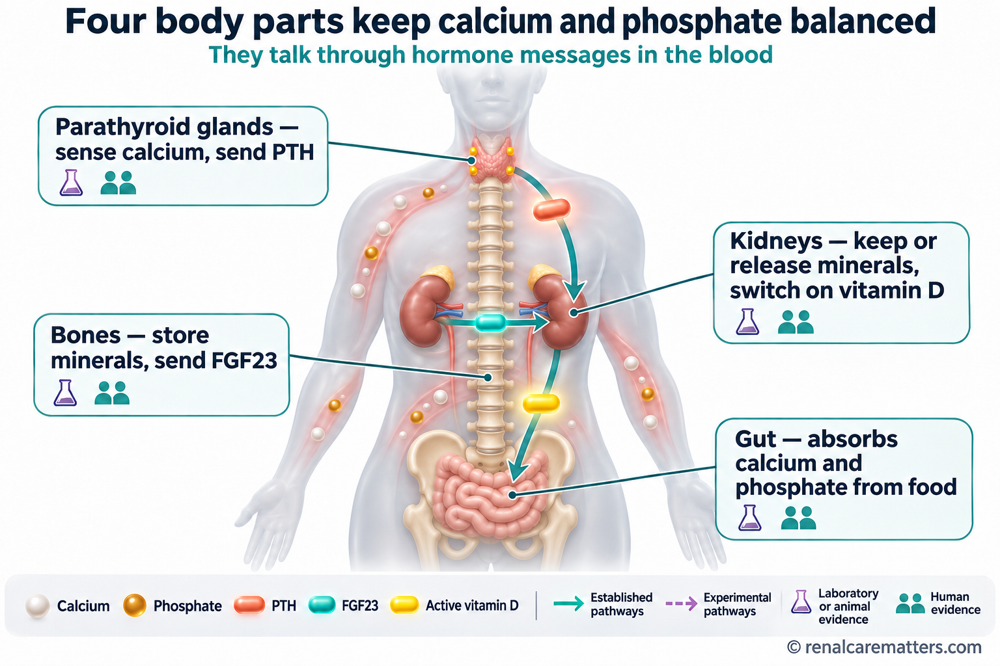
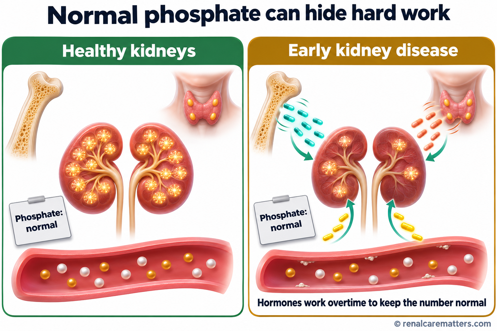
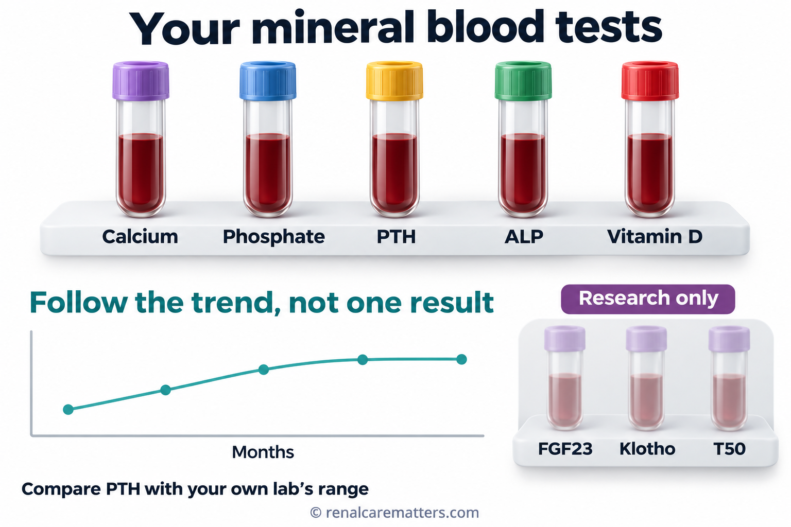
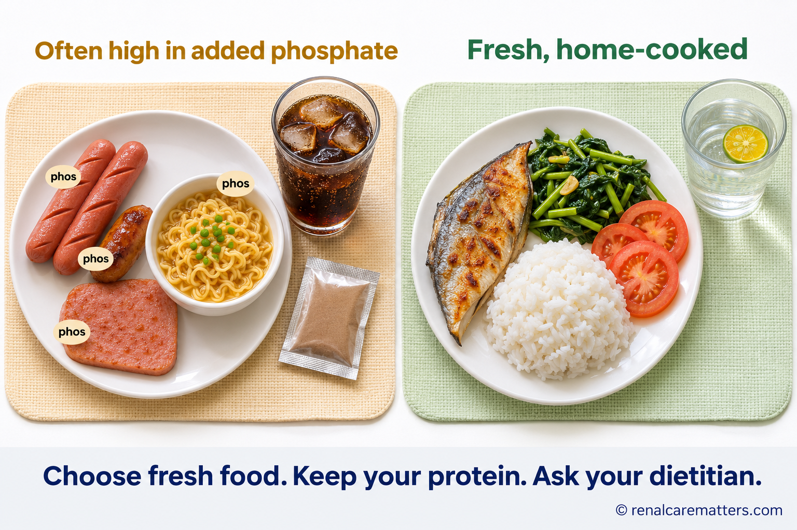
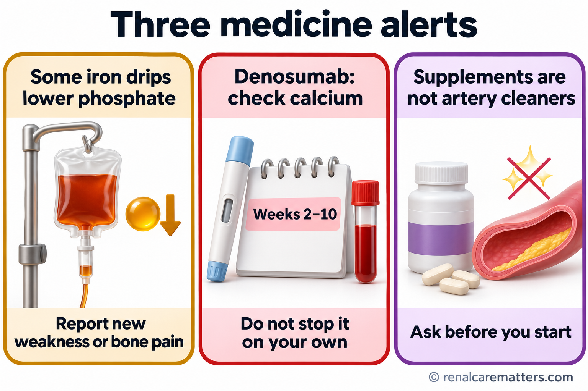
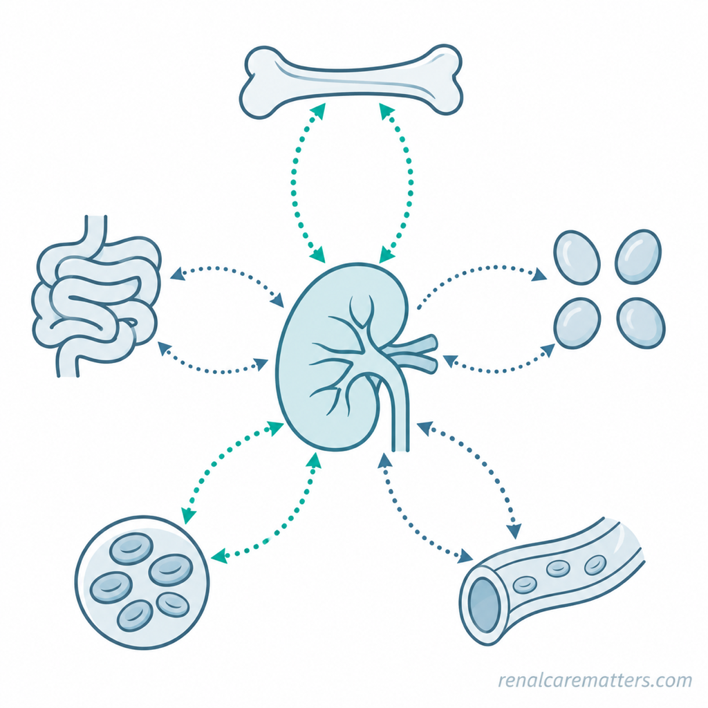
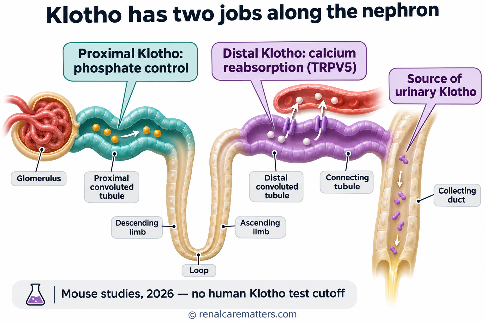
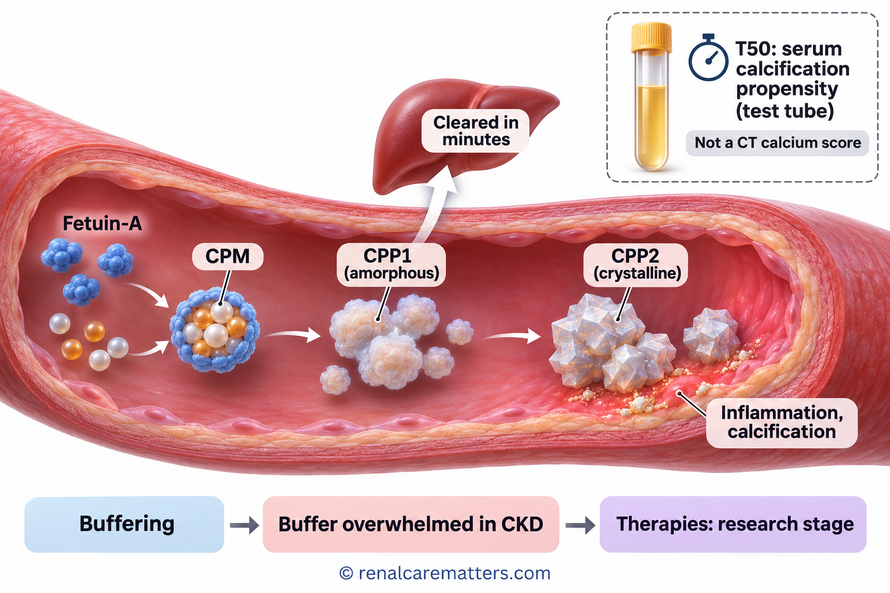
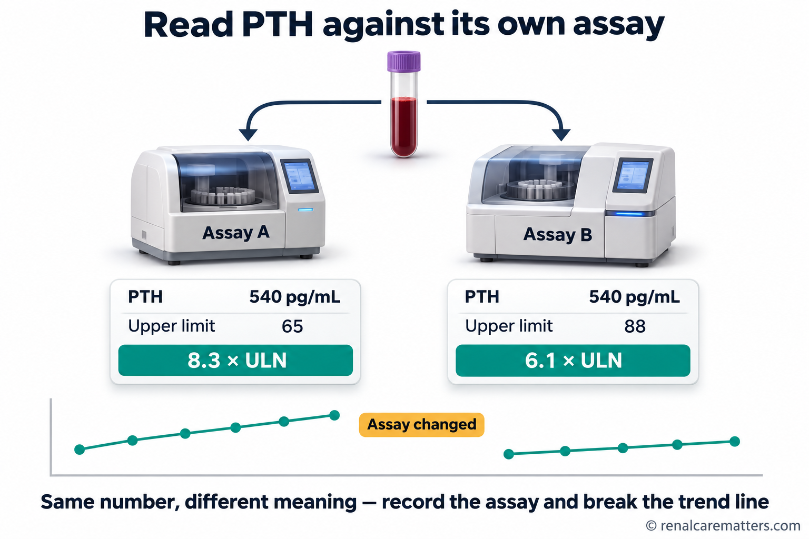
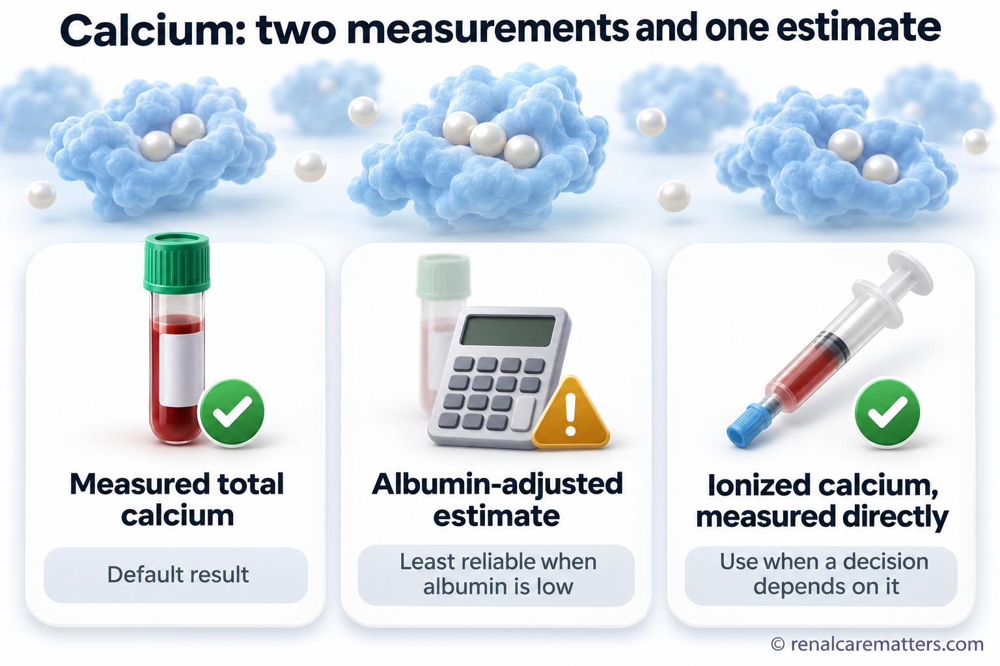

Four organs, one balancing actApat na organ, iisang pagbabalanseUpat ka organ, usa ka pagbalanseApat a organ, metung a pamagbalanse
Calcium and phosphate are the building blocks of your bones. Your blood must carry just the right amount of each. Too little, and nerves and muscles misfire. Too much, and the extra can harden into mineral deposits inside blood vessels. Four body parts share the job, and they “talk” to each other through hormones — chemical messages carried in the blood.Ang calcium at phosphate ang mga pangunahing sangkap ng iyong mga buto. Dapat tama lang ang dami ng bawat isa sa dugo. Kapag kulang, nagkakamali ang senyas ng ugat at kalamnan. Kapag sobra, ang labis ay maaaring tumigas at maging mineral na deposito sa loob ng mga ugat. Apat na bahagi ng katawan ang naghahati sa trabahong ito, at “nag-uusap” sila sa pamamagitan ng mga hormone — mga kemikal na mensaheng dala ng dugo.Ang calcium ug phosphate mao ang mga pangunang sangkap sa imong mga bukog. Kinahanglan husto lang ang gidaghanon sa matag usa sa dugo. Kung kulang, masayop ang senyas sa nerbiyos ug kaunoran. Kung sobra, ang sobra mahimong mogahi ug mahimong mineral nga deposito sulod sa mga ugat. Upat ka bahin sa lawas ang nagbahin niining trabahoa, ug sila “nag-istorya” pinaagi sa mga hormone — mga kemikal nga mensahe nga gidala sa dugo.Ing calcium at phosphate ing pamuntukan da reng butul mu. Kailangan dapat ya mu ing dakal da king daya. Nung kulang, malilyari la reng senyas da reng nerve at laman. Nung sobra, ing labis malyari yang tumigas at dapat yang mineral deposit king lub da reng ugat. Apat a bage ning katawan ing maghati king obrang iti, at “misasabi” la kapamilatan da reng hormone — kemikal a mensahe a dala ning daya.
The team. The gut absorbs calcium and phosphate from food. The kidneys decide how much to keep and how much to send out in urine, and they switch vitamin D on. The bones store minerals like a bank vault and, as we now know, also send out messages. The four small parathyroid glands in the neck watch blood calcium like a thermostat.Ang koponan. Ang bituka ang sumisipsip ng calcium at phosphate mula sa pagkain. Ang mga bato ang nagpapasya kung gaano karami ang itatabi at ilalabas sa ihi, at sila ang nagpapagana sa vitamin D. Ang mga buto ang nag-iimbak ng mineral na parang bangko, at ngayon alam nating nagpapadala rin sila ng mensahe. Ang apat na maliliit na parathyroid gland sa leeg ay nagbabantay sa calcium ng dugo na parang thermostat.Ang grupo. Ang tinai mosuyop sa calcium ug phosphate gikan sa pagkaon. Ang mga kidney ang modesisyon kung pila ang tipigan ug pila ang ipagawas sa ihi, ug sila ang mopaandar sa vitamin D. Ang mga bukog motipig sa mineral sama sa bangko, ug karon nahibal-an nato nga nagpadala usab sila og mensahe. Ang upat ka gagmay nga parathyroid gland sa liog mobantay sa calcium sa dugo sama sa thermostat.Ing grupu. Ing bituka ing manyupsup calcium at phosphate manibat king pamangan. Deng bató ing magdesisyun nung pilan ing itagu at pilan ing ipalwal king ume, at sila ing magpagana king vitamin D. Deng butul ing mangtagu mineral anti mong bangko, at ngeni balu tana a mamaldo la muring mensahe. Ing apat a malati a parathyroid gland king batal mabantay king calcium ning daya anti mong thermostat.
The messengers. PTH (parathyroid hormone) rises when calcium falls. Active vitamin D (calcitriol), made in the kidney, helps the gut absorb calcium. FGF23 (fibroblast growth factor 23) is made by bone cells; it tells the kidney to release phosphate into the urine and to slow vitamin D activation. FGF23 can only deliver its message where a partner protein called Klotho sits next to its receptor — like a key that only works in a lock fitted with a special latch. In real cells, Klotho binds the FGF23 receptor so the hormone can switch on phosphate excretion.Ang mga mensahero. Tumataas ang PTH (parathyroid hormone) kapag bumababa ang calcium. Ang aktibong vitamin D (calcitriol), na ginagawa sa bato, ay tumutulong sa bituka na sumipsip ng calcium. Ang FGF23 (fibroblast growth factor 23) ay gawa ng mga selula ng buto; sinasabihan nito ang bato na ilabas ang phosphate sa ihi at pabagalin ang pag-activate ng vitamin D. Naihahatid lang ng FGF23 ang mensahe nito kung may kasamang protina na tinatawag na Klotho sa tabi ng receptor nito — parang susi na gumagana lang sa kandadong may espesyal na trangka. Sa totoong selula, kumakapit ang Klotho sa receptor ng FGF23 para mapaandar ng hormone ang paglabas ng phosphate.Ang mga mensahero. Mosaka ang PTH (parathyroid hormone) kung moubos ang calcium. Ang aktibong vitamin D (calcitriol), nga gihimo sa kidney, motabang sa tinai sa pagsuyop sa calcium. Ang FGF23 (fibroblast growth factor 23) gihimo sa mga selula sa bukog; kini mosulti sa kidney nga ipagawas ang phosphate sa ihi ug hinayan ang pag-activate sa vitamin D. Mahatod lang sa FGF23 ang mensahe niini kung naay kauban nga protina nga gitawag og Klotho tupad sa receptor niini — sama sa yawe nga molihok lang sa kandado nga adunay espesyal nga trangka. Sa tinuod nga selula, mokapot ang Klotho sa receptor sa FGF23 aron mapaandar sa hormone ang pagpagawas sa phosphate.Deng mensahero. Mamuntuk ya ing PTH (parathyroid hormone) nung bumaba ya ing calcium. Ing aktibung vitamin D (calcitriol), a gawa king bató, tutulung king bituka ban manyupsup calcium. Ing FGF23 (fibroblast growth factor 23) gawa da reng selula ning butul; sasabyan na ing bató nung ipalwal na ing phosphate king ume at pabayalan ing pamag-activate ning vitamin D. Aintunan na mu ning FGF23 ing mensahe na nung atin yang kayabe a protina a Klotho king siping ning receptor na — anti mong susi a gagana mu king kandadu a atin espesyal a trangka. King tutung selula, kakapit ya ing Klotho king receptor ning FGF23 ban mapagana ning hormone ing pamalwal phosphate.

Four organs keep calcium and phosphate balanced by sending hormone messages to one another: the gut absorbs, the kidney keeps or releases, bone stores and signals, and the parathyroid glands sense calcium.Apat na organ ang nagpapanatili ng balanse ng calcium at phosphate sa pamamagitan ng mga mensaheng hormone: sumisipsip ang bituka, nagtatabi o naglalabas ang bato, nag-iimbak at nagsesenyas ang buto, at nararamdaman ng parathyroid ang calcium.Upat ka organ ang nagpabilin sa balanse sa calcium ug phosphate pinaagi sa mga mensaheng hormone: mosuyop ang tinai, motipig o mopagawas ang kidney, motipig ug mosenyas ang bukog, ug mabatyagan sa parathyroid ang calcium.Apat a organ ing mamanatili king balanse ning calcium at phosphate kapamilatan da reng mensaheng hormone: manyupsup ing bituka, mangtagu o mamalwal ing bató, mangtagu at mamaldo senyas ing butul, at daramdaman ning parathyroid ing calcium.
- PTH
- Parathyroid hormone
- FGF23
- Fibroblast growth factor 23
What scientists have recently discovered — and how sure we areAno ang bagong natuklasan ng mga siyentipiko — at gaano tayo kasiguradoUnsa ang bag-ong nadiskobrehan sa mga siyentista — ug unsa ka siguradoNanu ing bayung akit da reng siyentista — at nung makananu tang siguradu
Research between 2023 and 2026 found new links in this network. Most of it comes from mice and rats. These studies explain why things go wrong, but they are not yet tests or treatments you can ask for. Each card below carries a label so you can see the difference.Natuklasan ng pananaliksik mula 2023 hanggang 2026 ang mga bagong ugnayan sa network na ito. Karamihan ay mula sa daga. Ipinapaliwanag ng mga pag-aaral na ito kung bakit nagkakaproblema, pero hindi pa ito mga test o gamot na mahihingi mo. May label ang bawat card sa ibaba para makita mo ang pagkakaiba.Ang panukiduki gikan 2023 hangtod 2026 nakakaplag og bag-ong mga sumpay niining network. Kadaghanan gikan sa ilaga. Gipasabot niini nga mga pagtuon ngano nga adunay sayop, apan dili pa kini mga test o tambal nga imong mapangayo. Adunay label ang matag card sa ubos aron makita nimo ang kalainan.Ing pamanaliksik manibat 2023 anggang 2026 meakit lang bayung ugnayan king network a iti. Kadakalan manibat king dagis. Ipaliwanag da reng pamag-aral a iti nung obat magkaproblema, pero e pa la test o gamot a malyari mung pakisabyan. Atin label ing balang card king lalam ban akit mu ing kaibayu.
The kidney has a phosphate “smoke detector”May “smoke detector” ng phosphate ang batoAdunay “smoke detector” sa phosphate ang kidneyAtin “smoke detector” ning phosphate ing bató
When phosphate rises, kidney cells burn more sugar and make a small molecule (glycerol-3-phosphate) that travels to bone and tells it to make more FGF23. In mice, removing this signal blunted the FGF23 rise.Kapag tumaas ang phosphate, mas maraming asukal ang sinusunog ng selula ng bato at gumagawa ito ng maliit na molekula (glycerol-3-phosphate) na pumupunta sa buto para sabihing gumawa ng mas maraming FGF23. Sa daga, nang alisin ang senyas na ito, humina ang pagtaas ng FGF23.Kung mosaka ang phosphate, mas daghang asukal ang sunogon sa selula sa kidney ug mohimo kini og gamay nga molekula (glycerol-3-phosphate) nga moadto sa bukog aron sultihan nga mohimo og dugang FGF23. Sa ilaga, sa dihang gikuha kining senyas, mihinay ang pagsaka sa FGF23.Nung mamuntuk ing phosphate, dakal pang asukal ing sunugan da reng selula ning bató at gagawa yang malati a molekula (glycerol-3-phosphate) a muntang king butul ban sabyan yang gawa pang dakal a FGF23. King dagis, kanita ilako ya ing senyas a iti, mewa ing pamamuntuk ning FGF23.
Bone cells change how they burn fatNagbabago kung paano sinusunog ng selula ng buto ang tabaNausab kung giunsa pagsunog sa selula sa bukog ang tambokMababayu nung makananu sunugan da reng selula ning butul ing taba
In kidney disease, bone-building cells send fat away from their “power plants,” so less phosphate is laid into bone and more FGF23 is made. In 2026, blocking one enzyme (GPAT2) protected bones, arteries and the heart in mice. It is not a medicine yet.Sa sakit sa bato, inilalayo ng mga selulang gumagawa ng buto ang taba sa kanilang “power plant,” kaya mas kaunting phosphate ang napupunta sa buto at mas maraming FGF23 ang nagagawa. Noong 2026, nang harangin ang isang enzyme (GPAT2), naprotektahan ang buto, ugat at puso ng daga. Hindi pa ito gamot.Sa sakit sa kidney, gipalayo sa mga selulang naghimo og bukog ang tambok gikan sa ilang “power plant,” busa gamay ra ang phosphate nga moadto sa bukog ug mas daghang FGF23 ang mahimo. Niadtong 2026, sa dihang gibabagan ang usa ka enzyme (GPAT2), naprotektahan ang bukog, ugat ug kasingkasing sa ilaga. Dili pa kini tambal.King sakit king bató, iyadyu da reng selula a gagawa butul ing taba manibat king karelang “power plant,” anyang kaunti ing phosphate a mitatag king butul at dakal ing FGF23 a magawa. King 2026, kanita barangan ing metung a enzyme (GPAT2), meprotektaan ing butul, ugat at pusu da reng dagis. E pa ya gamot.
Klotho does different jobs in different placesIba-iba ang trabaho ng Klotho sa iba-ibang lugarLain-lain ang trabaho sa Klotho sa lain-laing dapitAliwa-aliwa ing obra ning Klotho king aliwa-aliwang lugal
In mice studied in 2026, Klotho in the last stretch of the kidney tubule kept calcium from leaking into urine and protected bone density, while Klotho near the start of the tubule controlled phosphate. No Klotho blood or urine test is ready for patient care.Sa mga dagang pinag-aralan noong 2026, pinigilan ng Klotho sa dulong bahagi ng tubo ng bato ang pagtagas ng calcium sa ihi at naprotektahan ang tibay ng buto, habang ang Klotho sa simula ng tubo ang kumokontrol sa phosphate. Wala pang Klotho test sa dugo o ihi na handa para sa pasyente.Sa mga ilaga nga gitun-an niadtong 2026, gipugngan sa Klotho sa katapusang bahin sa tubo sa kidney ang pagtulo sa calcium ngadto sa ihi ug naprotektahan ang kalig-on sa bukog, samtang ang Klotho sa sinugdanan sa tubo ang nagkontrolar sa phosphate. Wala pay Klotho test sa dugo o ihi nga andam alang sa pasyente.King dagis a pigaralan king 2026, pigpugnan ning Klotho king tauling bage ning tubu ning bató ing pamagtagas ning calcium king ume at meprotektaan ing tibey ning butul, kabang ing Klotho king puun ning tubu ing makontrol king phosphate. Ala pang Klotho test king daya o ume a sadya para king pasyente.
Activin A: a bone signal that did not predict fracturesActivin A: senyas ng buto na hindi nakahula ng baliActivin A: senyas sa bukog nga wala makatag-an sa baliActivin A: senyas ning butul a e na apakiramdaman ing bali
In 654 Japanese adults on hemodialysis, activin A was about 2.6 times higher than in healthy people and went with faster bone turnover. But it did not predict who broke a bone. A promising signal is not the same as a useful test.Sa 654 na Hapon na nasa hemodialysis, humigit-kumulang 2.6 na beses na mas mataas ang activin A kaysa sa malulusog na tao at kasabay ito ng mas mabilis na pagpapalit ng buto. Pero hindi nito nahulaan kung sino ang mababalian. Ang magandang senyas ay hindi pa kapareho ng kapaki-pakinabang na test.Sa 654 ka Hapon nga naa sa hemodialysis, mga 2.6 ka pilo nga mas taas ang activin A kaysa sa mga himsog nga tawo ug kauban kini sa mas paspas nga pag-ilis sa bukog. Apan wala kini makatag-an kung kinsa ang mabalian. Ang maayong senyas dili pa parehas sa mapuslanon nga test.King 654 a Hapon a atiu king hemodialysis, mga 2.6 a besis a mas matas ing activin A kesa kareng masalusung a tau at kayabe na ing mas malagwang pamagsalili ning butul. Pero e na apakiramdaman nung ninu ing mabalian. Ing masalese a senyas e pa pareu ning makatulung a test.
The blood’s calcium “cleanup crew”Ang “cleanup crew” ng calcium sa dugoAng “cleanup crew” sa calcium sa dugoIng “cleanup crew” ning calcium king daya
Proteins such as fetuin-A wrap extra calcium and phosphate into tiny particles so they can be cleared. When the crew is overwhelmed, the particles harden and may inflame artery walls. A research blood test (T50) that measures how quickly serum calcifies was linked to heart events in dialysis, but it is not proven to guide treatment.Binabalot ng mga protina tulad ng fetuin-A ang sobrang calcium at phosphate sa napakaliliit na particle para maalis. Kapag napuno ang crew, tumitigas ang mga particle at maaaring mamaga ang pader ng ugat. May research blood test (T50) na sumusukat kung gaano kabilis tumigas ang serum; naugnay ito sa mga atake sa puso sa dialysis, pero hindi pa napapatunayang gabay sa gamutan.Ang mga protina sama sa fetuin-A mobalot sa sobrang calcium ug phosphate ngadto sa gagmayng particle aron mawala. Kung mapuno ang crew, mogahi ang mga particle ug mahimong mohubag ang bungbong sa ugat. Adunay research blood test (T50) nga mosukod kung unsa kapaspas mogahi ang serum; nalambigit kini sa mga atake sa kasingkasing sa dialysis, apan wala pa napamatud-an nga giya sa pagtambal.Babalutan da reng protina anti ning fetuin-A ing sobrang calcium at phosphate king malating particle ban mailako. Nung mapnu ya ing crew, tumigas la reng particle at malyaring mamaga ing pader ning ugat. Atin research blood test (T50) a manukad nung makananu kalagwa tumigas ing serum; mayugne ya king atake king pusu king dialysis, pero e pa apatunayan a gabay king panulu.
Iron and phosphate are connectedMagkaugnay ang iron at phosphateMagkadugtong ang iron ug phosphateMayugne ing iron at phosphate
Low iron raises FGF23 production. Some iron infusions can also make phosphate drop sharply. In mice, red blood cell precursors make their own FGF23, which can slow red cell production — one more link between anemia and minerals.Pinapataas ng mababang iron ang paggawa ng FGF23. Ang ilang iron infusion ay maaari ring magpababa nang husto sa phosphate. Sa daga, gumagawa ng sariling FGF23 ang mga batang red blood cell, na maaaring magpabagal sa paggawa ng dugo — isa pang ugnayan ng anemia at mineral.Ang ubos nga iron mopataas sa paghimo og FGF23. Ang pipila ka iron infusion mahimo usab nga mopaubos pag-ayo sa phosphate. Sa ilaga, ang mga batan-ong red blood cell mohimo og kaugalingong FGF23, nga mahimong mopahinay sa paghimo og dugo — laing sumpay tali sa anemia ug mineral.Ing mababang iron papamuntukan na ing pamagawa FGF23. Ing aliwang iron infusion malyari namang pababan dakal ing phosphate. King dagis, gagawa la sariling FGF23 deng anak a red blood cell, a malyaring pabayalan ing pamagawa daya — metung pang ugnayan ning anemia at mineral.
A discovery in mice is not yet a treatment for peopleAng tuklas sa daga ay hindi pa gamot para sa taoAng diskobre sa ilaga dili pa tambal alang sa tawoIng akit king dagis e pa gamot para king tau
Blocking FGF23 in rats with kidney disease improved their parathyroid levels but raised phosphate, worsened artery calcification and increased deaths. That is why doctors treat FGF23 as a helper that may be overworked, not simply as a poison to remove.Nang harangin ang FGF23 sa mga dagang may sakit sa bato, gumanda ang kanilang parathyroid level pero tumaas ang phosphate, lumala ang pagtigas ng ugat at dumami ang namatay. Kaya itinuturing ng mga doktor ang FGF23 bilang katulong na maaaring sobra ang trabaho, hindi lang lason na dapat alisin.Sa dihang gibabagan ang FGF23 sa mga ilaga nga may sakit sa kidney, nindot ang ilang parathyroid level apan misaka ang phosphate, misamot ang pagtig-a sa ugat ug midaghan ang namatay. Mao nga giisip sa mga doktor ang FGF23 nga katabang nga tingali sobra na ang trabaho, dili lang hilo nga kinahanglan kuhaon.Kanita barangan ing FGF23 kareng dagis a atin sakit king bató, sumalese ing parathyroid level da pero mamuntuk ing phosphate, lumala ing pamagtigas ning ugat at dumakal ing mete. Yang sanhi, ibilang da reng doktor ing FGF23 a katulung a malyaring sobra ing obra na, e mu lason a kailangan ilako.8

Six recent discoveries, each labeled by the kind of evidence behind it: a flask means animal or laboratory research; a people icon means studies in patients.Anim na bagong tuklas, bawat isa may label ng uri ng ebidensya: ang flask ay pananaliksik sa hayop o laboratoryo; ang icon ng tao ay pag-aaral sa mga pasyente.Unom ka bag-ong diskobre, ang matag usa adunay label sa klase sa ebidensya: ang flask nagpasabot og panukiduki sa hayop o laboratoryo; ang icon sa tawo nagpasabot og pagtuon sa mga pasyente.Anam a bayung akit, balang metung atin label ning klasi ning ebidensya: ing flask pamanaliksik king animal o laboratoryo; ing icon ning tau pamag-aral kareng pasyente.
- FGF23
- Fibroblast growth factor 23
- GPAT2
- Glycerol-3-phosphate acyltransferase 2
- T50
- Serum calcification propensity test (half-transformation time)
When kidneys weaken: why “normal” phosphate can hide strainKapag humina ang bato: bakit maaaring itago ng “normal” na phosphate ang problemaKung maluya ang kidney: ngano nga ang “normal” nga phosphate makatago sa problemaNung manuya ing bató: obat a ing “normal” a phosphate malyari nang isalikut ing problema
As kidney filtering falls in chronic kidney disease (CKD), the kidneys struggle to send phosphate out. The body reacts early: bone makes more FGF23 and the parathyroid glands make more PTH. Both push extra phosphate into the urine from each remaining nephron (the kidney’s filtering unit), so the blood phosphate result can stay normal for years. Think of a store that keeps its shelves looking full only because the staff are working overtime.Habang bumababa ang pagsasala ng bato sa chronic kidney disease (CKD), nahihirapan ang bato na ilabas ang phosphate. Maagang tumutugon ang katawan: gumagawa ang buto ng mas maraming FGF23 at ang parathyroid ng mas maraming PTH. Pareho nilang itinutulak ang sobrang phosphate palabas sa ihi mula sa bawat natitirang nephron (ang yunit ng pagsasala ng bato), kaya maaaring manatiling normal ang resulta ng phosphate sa dugo nang ilang taon. Parang tindahang mukhang puno ang estante dahil lang nag-o-overtime ang mga tauhan.Samtang moubos ang pagsala sa kidney sa chronic kidney disease (CKD), maglisod ang kidney sa pagpagawas sa phosphate. Sayo nga motubag ang lawas: mohimo ang bukog og dugang FGF23 ug ang parathyroid og dugang PTH. Pareho nilang ituklod ang sobrang phosphate pagawas sa ihi gikan sa matag nahabilin nga nephron (ang yunit sa pagsala sa kidney), busa ang resulta sa phosphate sa dugo mahimong magpabilin nga normal sulod sa pipila ka tuig. Sama sa tindahan nga daw puno ang estante tungod lang kay nag-overtime ang mga trabahante.Kabang baba ing pamanyala ning bató king chronic kidney disease (CKD), mirapan ya ing bató ipalwal ing phosphate. Maaga yang tutugun ing katawan: gagawa ya pang dakal a FGF23 ing butul at dakal a PTH ing parathyroid. Pareu dang itulak ing sobrang phosphate palwal king ume manibat king balang meragang nephron (ing yunit ning pamanyala ning bató), anyang malyaring manatiling normal ing resulta ning phosphate king daya kabang dakal a banua. Anti mong tindahan a mukang mapnu ing estante uli mu ta mag-overtime la reng obrero.
The price of overtime. High FGF23 lowers active vitamin D, which lets PTH climb further. Over time, bone loses strength or turns over abnormally, and calcium and phosphate are more likely to deposit in artery walls and heart valves (vascular calcification), stiffening them and straining the heart. Doctors call the whole picture CKD-MBD (chronic kidney disease–mineral and bone disorder). High FGF23 has been linked to a higher risk of death in people with CKD, but such links do not prove that lowering FGF23 itself would help.Ang kapalit ng overtime. Pinabababa ng mataas na FGF23 ang aktibong vitamin D, kaya lalong tumataas ang PTH. Sa paglipas ng panahon, humihina ang buto o nagiging abnormal ang pagpapalit nito, at mas malamang na dumikit ang calcium at phosphate sa pader ng ugat at balbula ng puso (vascular calcification), kaya tumitigas ang mga ito at nahihirapan ang puso. Tinatawag ng mga doktor ang kabuuang larawang ito na CKD-MBD (chronic kidney disease–mineral and bone disorder). Naiugnay ang mataas na FGF23 sa mas mataas na panganib ng pagkamatay sa may CKD, pero hindi napapatunayan ng ganitong ugnayan na makakatulong ang pagpapababa mismo ng FGF23.Ang bayad sa overtime. Ang taas nga FGF23 mopaubos sa aktibong vitamin D, busa mas mosaka ang PTH. Sa paglabay sa panahon, maluya ang bukog o mahimong abnormal ang pag-ilis niini, ug mas lagmit nga motapot ang calcium ug phosphate sa bungbong sa ugat ug balbula sa kasingkasing (vascular calcification), busa mogahi kini ug maglisod ang kasingkasing. Gitawag sa mga doktor kining tibuok hulagway nga CKD-MBD (chronic kidney disease–mineral and bone disorder). Ang taas nga FGF23 nalambigit sa mas taas nga risgo sa kamatayon sa may CKD, apan kini nga sumpay wala magpamatuod nga makatabang ang pagpaubos mismo sa FGF23.Ing kabayaran ning overtime. Pababan ning matas a FGF23 ing aktibung vitamin D, anyang lalung mamuntuk ing PTH. Kabang malabas ing panaun, manuya ing butul o dapat yang abnormal ing pamagsalili na, at mas malyaring dumikit ing calcium at phosphate king pader ning ugat at balbula ning pusu (vascular calcification), anyang tumigas la at mirapan ing pusu. Ausan da reng doktor ing sablang larawan a iti CKD-MBD (chronic kidney disease–mineral and bone disorder). Mayugne ya ing matas a FGF23 king matas a panganib a mete kareng atin CKD, pero ing ugnayan a iti e na patunayan a makatulung ing pamababa mismu king FGF23.
9
In early kidney disease, extra FGF23 and PTH keep blood phosphate looking normal, but the hormones are working overtime — and that strain can weaken bone and stiffen arteries over the years.Sa maagang sakit sa bato, pinapanatiling normal ng sobrang FGF23 at PTH ang phosphate sa dugo, pero nag-o-overtime ang mga hormone — at ang pagod na iyon ay maaaring magpahina ng buto at magpatigas ng ugat sa paglipas ng mga taon.Sa sayong sakit sa kidney, ang sobrang FGF23 ug PTH magpabilin nga normal ang phosphate sa dugo, apan nag-overtime ang mga hormone — ug kining kakapoy makapaluya sa bukog ug makapagahi sa ugat sa paglabay sa katuigan.King maagang sakit king bató, ing sobrang FGF23 at PTH panatilian dang normal ing phosphate king daya, pero mag-overtime la reng hormone — at ing kapagalan a ita malyari nang pawan ing butul at patigasan ing ugat kabang malabas ing banua.
- CKD
- Chronic kidney disease
- FGF23
- Fibroblast growth factor 23
- PTH
- Parathyroid hormone
Your blood tests: what each one can and cannot tell youAng iyong mga blood test: ano ang kaya at hindi kayang sabihin ng bawat isaAng imong mga blood test: unsa ang masulti ug dili masulti sa matag usaDeng blood test mu: nanu ing kayang sabyan at e kayang sabyan ning balang metung
| TestTestTestTest | What it showsAno ang ipinapakitaUnsa ang gipakitaNanu ing ipakit na | Helpful tipPayoTambagTagubilin |
|---|---|---|
| Calcium (total)Calcium (total)Calcium (total)Calcium (total) | All calcium in the blood, including the part carried on the protein albumin.Lahat ng calcium sa dugo, kasama ang bahaging nakasakay sa protinang albumin.Tanang calcium sa dugo, lakip ang bahin nga nakasakay sa protinang albumin.Sablang calcium king daya, kayabe ing bage a makasakay king protinang albumin. | A “corrected” calcium is a formula, not a measurement. A 2025 study of 22,658 adults found it misclassified calcium more often than the plain result. When it matters, the lab can measure ionized calcium directly.Ang “corrected” calcium ay pormula, hindi aktuwal na sukat. Natuklasan ng isang pag-aaral noong 2025 sa 22,658 adulto na mas madalas itong magkamali kaysa sa simpleng resulta. Kapag mahalaga, kayang sukatin ng lab ang ionized calcium nang direkta.Ang “corrected” calcium usa ka pormula, dili tinuod nga sukod. Usa ka pagtuon niadtong 2025 sa 22,658 ka hamtong nakakaplag nga mas kanunay kining masayop kaysa sa yanong resulta. Kung importante, masukod sa lab ang ionized calcium direkta.Ing “corrected” calcium pormula ya, e tutung sukad. Metung a pamag-aral king 2025 king 22,658 a matua akit da a mas maralas yang malisya kesa king simpling resulta. Nung mayalaga, kayang sukatan ning lab ing ionized calcium direktu.27 |
| PhosphatePhosphatePhosphatePhosphate | The mineral the kidneys must clear. It rises late in kidney disease.Ang mineral na kailangang ilabas ng bato. Huli itong tumataas sa sakit sa bato.Ang mineral nga kinahanglan ipagawas sa kidney. Ulahi kining mosaka sa sakit sa kidney.Ing mineral a kailangan ipalwal ning bató. Tauli yang mamuntuk king sakit king bató. | Results swing with meals and the time since dialysis. Follow the trend, taken the same way each time.Nagbabago ang resulta depende sa kain at oras mula sa dialysis. Sundan ang trend, na kinukuha sa parehong paraan tuwina.Mausab ang resulta depende sa kaon ug oras sukad sa dialysis. Sundan ang trend, nga kuhaon sa samang paagi matag higayon.Mababayu ya ing resulta depende king pamangan at oras manibat king dialysis. Tutuken ing trend, a kayan king pareung paralan balang besis. |
| PTH (parathyroid hormone)PTH (parathyroid hormone)PTH (parathyroid hormone)PTH (parathyroid hormone) | How hard the parathyroid glands are working.Kung gaano kasipag nagtatrabaho ang parathyroid gland.Kung unsa kakugi nagtrabaho ang parathyroid gland.Nung makananu kasipag magobra ing parathyroid gland. | Labs use different test kits with different normal ranges. The same blood can read very differently between kits. Compare your result with your lab’s upper limit, and use the same lab when you can.Iba-iba ang test kit ng mga lab at iba-iba ang normal na saklaw. Ang parehong dugo ay maaaring magkaiba ang resulta sa iba’t ibang kit. Ikumpara ang resulta sa upper limit ng iyong lab, at gamitin ang parehong lab hangga’t maaari.Lain-lain ang test kit sa mga lab ug lain-lain ang normal nga sakop. Ang samang dugo mahimong lahi kaayo ang resulta sa lain-laing kit. Ikumpara ang resulta sa upper limit sa imong lab, ug gamita ang samang lab kutob sa mahimo.Aliwa-aliwa ing test kit da reng lab at aliwa-aliwa ing normal a saklaw. Ing pareung daya malyaring maliari ing resulta king aliwa-aliwang kit. Ikumpara ing resulta mu king upper limit ning lab mu, at gamitan ing pareung lab nung malyari.30 |
| Alkaline phosphatase (ALP)Alkaline phosphatase (ALP)Alkaline phosphatase (ALP)Alkaline phosphatase (ALP) | An enzyme from bone and liver; a rough gauge of bone activity.Enzyme mula sa buto at atay; magaspang na sukatan ng aktibidad ng buto.Enzyme gikan sa bukog ug atay; banabana nga sukod sa aktibidad sa bukog.Enzyme manibat king butul at atay; magaspang a sukatan ning aktibidad ning butul. | Read it together with PTH; liver problems also raise it.Basahin kasama ng PTH; tumataas din ito kapag may problema sa atay.Basaha kauban sa PTH; mosaka usab kini kung adunay problema sa atay.Basan kayabe ning PTH; mamuntuk ya muri nung atin problema king atay. |
| Vitamin D (25-hydroxy)Vitamin D (25-hydroxy)Vitamin D (25-hydroxy)Vitamin D (25-hydroxy) | Your vitamin D stores.Ang iyong imbak na vitamin D.Ang imong tipig nga vitamin D.Ing tagu mung vitamin D. | Different from active vitamin D medicines, which are prescribed for PTH control.Iba sa mga gamot na aktibong vitamin D, na inirereseta para kontrolin ang PTH.Lahi sa mga tambal nga aktibong vitamin D, nga gireseta aron makontrol ang PTH.Aliwa king gamot a aktibung vitamin D, a ireseta ban kontrolan ing PTH. |
| FGF23, Klotho, activin A, T50FGF23, Klotho, activin A, T50FGF23, Klotho, activin A, T50FGF23, Klotho, activin A, T50 | Research tests.Mga research test.Mga research test.Deng research test. | Not part of routine care; results would not change your treatment today.Hindi bahagi ng karaniwang gamutan; hindi nito babaguhin ang iyong gamutan ngayon.Dili bahin sa naandang pagtambal; dili kini mousab sa imong pagtambal karon.E bage ning karaniwang panulu; e na babayuan ing panulu mu ngeni. |
One result is a snapshot; a trend is the storyAng isang resulta ay litrato; ang trend ang kuwentoAng usa ka resulta litrato; ang trend mao ang istoryaIng metung a resulta litratu; ing trend ing kuwentu
International kidney guidelines (KDIGO, Kidney Disease: Improving Global Outcomes) recommend making treatment decisions from the direction of calcium, phosphate and PTH over time, read together, rather than from a single value. Keep copies of your results and bring them to each visit.Inirerekomenda ng internasyonal na gabay sa bato (KDIGO, Kidney Disease: Improving Global Outcomes) na ibatay ang desisyon sa gamutan sa direksyon ng calcium, phosphate at PTH sa paglipas ng panahon, na binabasa nang magkakasama, hindi sa iisang resulta. Itago ang kopya ng mga resulta at dalhin sa bawat konsulta.Girekomendar sa internasyonal nga giya sa kidney (KDIGO, Kidney Disease: Improving Global Outcomes) nga ibase ang desisyon sa pagtambal sa direksyon sa calcium, phosphate ug PTH sa paglabay sa panahon, nga basahon nga dungan, dili sa usa ra ka resulta. Tipigi ang kopya sa mga resulta ug dad-a sa matag konsulta.Irekomenda ning internasyunal a gabay king bató (KDIGO, Kidney Disease: Improving Global Outcomes) a ibatay ing desisyun king panulu king direksyun ning calcium, phosphate at PTH kabang malabas ing panaun, a basan a misasabay, e king metung mu a resulta. Itagu ing kopya da reng resulta at darandalan king balang konsulta.1

The routine tests that guide care, read as a trend over time; research markers such as FGF23, Klotho and T50 sit apart because they do not yet guide treatment.Ang mga karaniwang test na gabay sa gamutan, binabasa bilang trend; hiwalay ang mga research marker tulad ng FGF23, Klotho at T50 dahil hindi pa ito gabay sa gamutan.Ang naandang mga test nga giya sa pagtambal, basahon isip trend; lahi ang mga research marker sama sa FGF23, Klotho ug T50 tungod kay dili pa kini giya sa pagtambal.Deng karaniwang test a gabay king panulu, basan bilang trend; mibukud la reng research marker anti ning FGF23, Klotho at T50 uli ta e pa la gabay king panulu.
- PTH
- Parathyroid hormone
- ALP
- Alkaline phosphatase
- FGF23
- Fibroblast growth factor 23
- T50
- Serum calcification propensity test
What actually helps todayAno talaga ang nakakatulong ngayonUnsa gyud ang makatabang karonNanu talaga ing makatulung ngeni
The treatments below are part of standard care. They reliably improve the laboratory numbers. Whether bringing those numbers to target helps people live longer or avoid heart attacks has not been proven in large trials, so doctors aim to move results toward normal and avoid extremes, rather than chasing a perfect number.Bahagi ng karaniwang gamutan ang mga nasa ibaba. Maaasahang napapabuti nila ang mga numero sa lab. Kung ang pag-abot sa target ay nakakatulong sa mas mahabang buhay o pag-iwas sa atake sa puso ay hindi pa napapatunayan sa malalaking trial, kaya layunin ng doktor na ilapit ang resulta patungo sa normal at iwasan ang sobra, sa halip na habulin ang perpektong numero.Bahin sa naandang pagtambal ang mga anaa sa ubos. Kasaligan nga mapaayo nila ang mga numero sa lab. Kung ang pagkab-ot sa target makatabang sa mas taas nga kinabuhi o paglikay sa atake sa kasingkasing wala pa napamatud-an sa dagkong trial, busa tumong sa doktor nga iduol ang resulta ngadto sa normal ug likayan ang sobra, imbes gukdon ang perpektong numero.Bage ning karaniwang panulu deng atiu king lalam. Asahan dang pasalesean deng numero king lab. Nung ing pamakarating king target makatulung king mas mabilug a bie o pamaglayu king atake king pusu e pa apatunayan king maragul a trial, anyang layunin ning doktor a ilapit ing resulta patuknang king normal at ilagan ing sobra, kesa nung abulan ing perpektung numero.
- Limit added phosphate. Phosphate additives in processed food are absorbed almost completely, while phosphate in fresh, natural food is absorbed less. Common sources: hotdogs, longganisa, tocino, ham, luncheon meat, canned meats, processed cheese, instant noodles, dark colas, and many powdered drinks and creamers. Look for “phos” in the ingredient list.Bawasan ang idinagdag na phosphate. Halos buong nasisipsip ang phosphate additive sa processed food, habang mas kaunti ang nasisipsip mula sa sariwa at natural na pagkain. Karaniwang pinagmumulan: hotdog, longganisa, tocino, ham, luncheon meat, de-latang karne, processed cheese, instant noodles, dark cola, at maraming powdered drink at creamer. Hanapin ang “phos” sa listahan ng sangkap.Kunhoi ang gidugang nga phosphate. Hapit tanan masuyop ang phosphate additive sa processed food, samtang gamay ra ang masuyop gikan sa presko ug natural nga pagkaon. Kasagarang tinubdan: hotdog, longganisa, tocino, ham, luncheon meat, de-latang karne, processed cheese, instant noodles, dark cola, ug daghang powdered drink ug creamer. Pangitaa ang “phos” sa lista sa sangkap.Pakuntian ing midagdag a phosphate. Mangabilug a masupsup ing phosphate additive king processed food, kabang kaunti mu ing masupsup manibat king sariwa at natural a pamangan. Karaniwang pangatalan: hotdog, longganisa, tocino, ham, luncheon meat, de-latang karni, processed cheese, instant noodles, dark cola, at dakal a powdered drink at creamer. Panintunan ing “phos” king listaan da reng sangkap.
- Do not cut protein on your own. Protein is needed for muscle and healing, especially on dialysis. A renal dietitian can balance protein and phosphate for you.Huwag bawasan ang protina nang mag-isa. Kailangan ang protina sa kalamnan at paggaling, lalo na sa dialysis. Kayang balansehin ng renal dietitian ang protina at phosphate para sa iyo.Ayaw kunhoa ang protina nga ikaw ra. Kinahanglan ang protina sa kaunoran ug pag-ayo, labi na sa dialysis. Mabalanse sa renal dietitian ang protina ug phosphate alang kanimo.Ali mung pakuntian ing protina a ika mu. Kailangan ing protina king laman at pamanyalese, lalu na king dialysis. Kayang balansean ning renal dietitian ing protina at phosphate para keka.
- Take phosphate binders with meals, as prescribed. They trap phosphate from food in the gut. Calcium-based binders add calcium, so doctors limit their dose.Inumin ang phosphate binder kasabay ng pagkain, ayon sa reseta. Hinuhuli nito ang phosphate mula sa pagkain sa bituka. Nagdadagdag ng calcium ang mga binder na may calcium, kaya nililimitahan ng doktor ang dosis.Imna ang phosphate binder kauban sa pagkaon, sumala sa reseta. Dakpon niini ang phosphate gikan sa pagkaon sa tinai. Ang mga binder nga may calcium modugang og calcium, busa limitahan sa doktor ang dosis.Inuman ing phosphate binder kayabe ning pamangan, agpang king reseta. Dakpan na ing phosphate manibat king pamangan king bituka. Ing binder a atin calcium magdagdag calcium, anyang limitan ning doktor ing dosis.
- Tell your doctor about every calcium tablet, antacid and supplement. They all add to your daily calcium load.Sabihin sa doktor ang bawat calcium tablet, antacid at supplement. Lahat ng ito ay nagdadagdag sa calcium mo araw-araw.Sultihi ang doktor bahin sa matag calcium tablet, antacid ug supplement. Tanan kini modugang sa imong calcium kada adlaw.Sabyan me ing doktor king balang calcium tablet, antacid at supplement. Sabla reti magdagdag king calcium mu aldo-aldo.
- Get the full dialysis time if you are on dialysis; each session removes phosphate.Kumpletuhin ang oras ng dialysis kung nagda-dialysis ka; bawat sesyon ay nag-aalis ng phosphate.Kompletoha ang oras sa dialysis kung nag-dialysis ka; ang matag sesyon motangtang og phosphate.Kumpletuan ing oras ning dialysis nung mag-dialysis ka; ing balang sesyun mangilako phosphate.
- Medicines that lower PTH — active vitamin D or a calcimimetic such as cinacalcet — are used when PTH keeps rising.Mga gamot na nagpapababa ng PTH — aktibong vitamin D o calcimimetic tulad ng cinacalcet — ay ginagamit kapag patuloy na tumataas ang PTH.Mga tambal nga mopaubos sa PTH — aktibong vitamin D o calcimimetic sama sa cinacalcet — gigamit kung padayon nga mosaka ang PTH.Gamot a mamababa king PTH — aktibung vitamin D o calcimimetic anti ning cinacalcet — gagamitan nung tuloy-tuloy yang mamuntuk ing PTH.
- Stay active and prevent falls. Walking and safe strength exercise support bone; clear floors and good lighting prevent fractures.Manatiling aktibo at iwasan ang pagkahulog. Nakakatulong sa buto ang paglalakad at ligtas na ehersisyo sa lakas; naiiwasan ang bali kapag malinis ang sahig at maliwanag ang ilaw.Magpabiling aktibo ug likayi ang pagkapukan. Makatabang sa bukog ang paglakaw ug luwas nga ehersisyo sa kusog; malikayan ang bali kung limpyo ang salog ug hayag ang suga.Manatiling aktibu at ilagan ing pamagkabagsak. Makatulung king butul ing pamaglakad at ligtas a ehersisyu king sikanan; malilagan ing bali nung malinis ing sulip at maliwanag ing ilaw.

Phosphate added to processed foods is absorbed far more completely than phosphate in fresh home-cooked food; choosing fresh dishes lowers the phosphate load without giving up protein.Mas buong nasisipsip ang phosphate na idinagdag sa processed food kaysa sa phosphate sa sariwang lutong-bahay; ang pagpili ng sariwang ulam ay nagpapababa ng phosphate nang hindi isinusuko ang protina.Mas hingpit nga masuyop ang phosphate nga gidugang sa processed food kaysa sa phosphate sa presko nga linuto sa balay; ang pagpili og presko nga sud-an mopaubos sa phosphate nga dili isakripisyo ang protina.Mas mabilug a masupsup ing phosphate a midagdag king processed food kesa king phosphate king sariwang lutung-bale; ing pamipili sariwang ulam pababan na ing phosphate a e isuku ing protina.
Three medicine alerts worth knowingTatlong babala sa gamot na dapat malamanTulo ka pahimangno sa tambal nga angay mahibaloanAtlung babala king gamot a dapat abalu
1. Some iron infusions can drop phosphate1. Ang ilang iron infusion ay nakakapagpababa ng phosphate1. Ang pipila ka iron infusion makapaubos sa phosphate1. Ing aliwang iron infusion makababa phosphate
In two trials of adults with normal kidney function, low phosphate followed ferric carboxymaltose in about 3 of every 4 people, compared with fewer than 1 in 10 after ferric derisomaltose. Iron sucrose, widely used in Philippine dialysis units, had a much lower rate in pooled trials. Tell your team about new weakness, bone pain or muscle aches after an iron infusion. These trial rates do not predict your personal risk.Sa dalawang trial ng mga adultong normal ang bato, bumaba ang phosphate pagkatapos ng ferric carboxymaltose sa humigit-kumulang 3 sa bawat 4 na tao, kumpara sa mas kaunti sa 1 sa 10 pagkatapos ng ferric derisomaltose. Ang iron sucrose, na malawakang ginagamit sa mga dialysis unit sa Pilipinas, ay may mas mababang rate sa pinagsama-samang trial. Sabihin sa team ang bagong panghihina, sakit ng buto o kalamnan pagkatapos ng iron infusion. Hindi hinuhulaan ng mga rate na ito ang iyong personal na panganib.Sa duha ka trial sa mga hamtong nga normal ang kidney, miubos ang phosphate human sa ferric carboxymaltose sa mga 3 sa matag 4 ka tawo, kumpara sa ubos sa 1 sa 10 human sa ferric derisomaltose. Ang iron sucrose, nga kaylap nga gigamit sa mga dialysis unit sa Pilipinas, adunay mas ubos nga rate sa gihiusang mga trial. Sultihi ang team bahin sa bag-ong kaluya, sakit sa bukog o kaunoran human sa iron infusion. Dili matag-an niining mga rate ang imong personal nga risgo.King adwang trial da reng matua a normal ing bató, mebabang ing phosphate kaibat ning ferric carboxymaltose king mga 3 king balang 4 a tau, kumpara king kulang king 1 king 10 kaibat ning ferric derisomaltose. Ing iron sucrose, a malawak a gagamitan kareng dialysis unit king Pilipinas, atin yang mas mababang rate king mitipun a trial. Sabyan me ing team nung atin bayung kapaniwan, sakit ning butul o laman kaibat ning iron infusion. E la apakiramdaman deng rate a iti ing personal mung panganib.23,25
2. Denosumab (Prolia) can cause dangerously low calcium in advanced kidney disease2. Ang denosumab (Prolia) ay maaaring magdulot ng mapanganib na mababang calcium sa malalang sakit sa bato2. Ang denosumab (Prolia) mahimong hinungdan sa delikadong ubos nga calcium sa grabe nga sakit sa kidney2. Ing denosumab (Prolia) malyaring sanhi ning mapanganib a mababang calcium king malalang sakit king bató
In a large US study of women aged 65 or older on dialysis, about 4 in 10 developed severely low calcium within 12 weeks of starting denosumab, compared with about 2 in 100 on bisphosphonate tablets. The US Food and Drug Administration (FDA) added its strongest (“boxed”) warning in 2024. If you are on dialysis or have advanced CKD, denosumab needs specialist planning and frequent calcium checks, especially 2 to 10 weeks after each injection. Do not stop it on your own — stopping suddenly can cause rapid bone loss and spine fractures. Get urgent care for tingling around the mouth, muscle spasms or seizures.Sa isang malaking pag-aaral sa US ng mga babaeng 65 pataas na nasa dialysis, mga 4 sa 10 ang nagkaroon ng napakababang calcium sa loob ng 12 linggo mula sa pagsimula ng denosumab, kumpara sa mga 2 sa 100 sa bisphosphonate na tableta. Idinagdag ng US Food and Drug Administration (FDA) ang pinakamahigpit nitong (“boxed”) babala noong 2024. Kung nasa dialysis ka o may malalang CKD, kailangan ng planong mula sa espesyalista at madalas na pagsusuri ng calcium, lalo na 2 hanggang 10 linggo pagkatapos ng bawat iniksyon. Huwag itong ihinto nang mag-isa — ang biglang paghinto ay maaaring magdulot ng mabilis na pagkawala ng buto at bali sa gulugod. Magpatingin agad kung may pangingilig sa paligid ng bibig, pulikat o kombulsyon.Sa usa ka dakong pagtuon sa US sa mga babaye nga 65 pataas nga naa sa dialysis, mga 4 sa 10 ang adunay grabe kaubos nga calcium sulod sa 12 ka semana human magsugod sa denosumab, kumpara sa mga 2 sa 100 sa bisphosphonate nga tableta. Gidugang sa US Food and Drug Administration (FDA) ang labing estrikto niining (“boxed”) pahimangno niadtong 2024. Kung naa ka sa dialysis o adunay grabe nga CKD, kinahanglan ang plano gikan sa espesyalista ug kanunay nga pagsusi sa calcium, labi na 2 hangtod 10 ka semana human sa matag indyeksyon. Ayaw kini hunonga nga ikaw ra — ang kalit nga paghunong mahimong hinungdan sa paspas nga pagkawala sa bukog ug bali sa dugokan. Pagpatan-aw dayon kung adunay pangulipot palibot sa baba, kalambre o kombulsyon.King metung a maragul a pamag-aral king US da reng babai a 65 pataas a atiu king dialysis, mga 4 king 10 ing ginaru ning sobrang babang calcium king lub ning 12 a dominggu manibat king pamamuntuk ning denosumab, kumpara king mga 2 king 100 king bisphosphonate a tableta. Pepalwal ning US Food and Drug Administration (FDA) ing pekamaigting na a (“boxed”) babala king 2024. Nung atiu ka king dialysis o atin kang malalang CKD, kailangan ing planu manibat king espesyalista at maralas a pamanyuri ning calcium, lalu na 2 anggang 10 dominggu kaibat ning balang iniksyun. Ali mu yang ituknang a ika mu — ing biglang pamanuknang malyaring sanhi ning malagwang pamagkawala ning butul at bali king gulugud. Patingin ka agad nung atin pamagkilig king palibut ning asbuk, pulikat o kombulsyun.28,29
3. Supplements have not cleared calcium from arteries3. Hindi naalis ng mga supplement ang calcium sa mga ugat3. Wala makatangtang sa calcium sa mga ugat ang mga supplement3. E na ailako da reng supplement ing calcium kareng ugat
Magnesium tablets for 12 months did not slow artery calcification in people with CKD, and vitamin K2 did not slow it in people on dialysis. Do not start these, or calcium pills, “for the arteries” without your doctor.Hindi napabagal ng magnesium tablet sa loob ng 12 buwan ang pagtigas ng ugat sa may CKD, at hindi rin napabagal ng vitamin K2 ito sa mga nasa dialysis. Huwag simulan ang mga ito, o ang calcium pill, “para sa ugat” nang walang payo ng doktor.Wala mapahinay sa magnesium tablet sulod sa 12 ka bulan ang pagtig-a sa ugat sa may CKD, ug wala usab mapahinay sa vitamin K2 kini sa mga naa sa dialysis. Ayaw sugdi kini, o ang calcium pill, “para sa ugat” nga walay tambag sa doktor.E na apabayalan ning magnesium tablet king lub ning 12 bulan ing pamagtigas ning ugat kareng atin CKD, at e na muring apabayalan ning vitamin K2 kareng atiu king dialysis. Ali yu la pun deti, o ing calcium pill, “para king ugat” a alang payu ning doktor.20,21

Three alerts: some iron infusions lower phosphate, denosumab can cause severe low calcium in advanced kidney disease and needs close calcium checks, and supplements have not reversed artery calcification.Tatlong babala: ang ilang iron infusion ay nagpapababa ng phosphate, ang denosumab ay maaaring magdulot ng napakababang calcium sa malalang sakit sa bato at nangangailangan ng malapit na pagsusuri ng calcium, at hindi naibalik ng supplement ang pagtigas ng ugat.Tulo ka pahimangno: ang pipila ka iron infusion mopaubos sa phosphate, ang denosumab mahimong hinungdan sa grabe kaubos nga calcium sa grabe nga sakit sa kidney ug nagkinahanglan og duol nga pagsusi sa calcium, ug wala mabalik sa supplement ang pagtig-a sa ugat.Atlung babala: ing aliwang iron infusion pababan na ing phosphate, ing denosumab malyaring sanhi ning sobrang babang calcium king malalang sakit king bató at kailangan ing malapit a pamanyuri ning calcium, at e na apabalik ning supplement ing pamagtigas ning ugat.
- IV
- Intravenous (into a vein)
Common questionsMga karaniwang tanongKasagarang pangutanaKaraniwang kutang
What changes practice today — and what does not yet
Mineral metabolism is an interorgan signaling network. The kidney senses phosphate availability, bone integrates metabolic and hormonal signals, and circulating mineral buffers influence where calcium–phosphate crystals form. Fibroblast growth factor 23 (FGF23) and αKlotho remain central, while glycerol-3-phosphate (G-3-P), osteoblast lipid metabolism, activin A and calciprotein particles (CPP) offer new explanations for the abnormalities of chronic kidney disease–mineral and bone disorder (CKD-MBD). The practical task is to separate the findings that change care today from those that remain research tools.
Most of the new biology in this guide comes from rodent models published between 2023 and 2026. It is mechanistically strong and clinically premature: none of it yet supplies a validated test threshold or a therapy that improves outcomes patients feel. The bedside changes come instead from older, more prosaic evidence — guideline statements on how to read laboratory data, randomized trials of intravenous (IV) iron formulations, a large safety cohort on denosumab, and a 2025 study that undercuts albumin-adjusted calcium.
- The graded guideline is still KDIGO 2017. The Kidney Disease: Improving Global Outcomes (KDIGO) 2023 Controversies Conference (published January 2025) concluded the 2017 recommendations remained largely consistent with the evidence and proposed reframing adult disease as CKD-associated osteoporosis and CKD-associated cardiovascular disease; it did not issue new graded recommendations.1,2
- Decide on trends, read together. Base treatment on serial calcium, phosphate and parathyroid hormone (PTH), not a single value (KDIGO 3.1.4, grade 1C; 4.1.1, not graded).1
- PTH is only interpretable against its own assay. In dialysis pools, median bias versus a reference assay ranged from −44.9% to +123% across 15 immunoassays; laboratories should report method changes (KDIGO 3.1.6, 1B).30,1
- Measured calcium is the default; adjusted calcium is not ionized calcium. Unadjusted total calcium agreed with ionized calcium in 74.5% of 22,658 adults versus 58.7% for the simplified Payne formula, and adjustment performed worst in hypoalbuminemia.27
- IV iron formulation matters for phosphate. Ferric carboxymaltose (FCM) causes FGF23-mediated hypophosphatemia far more often than ferric derisomaltose or iron sucrose; review formulation, timing and phosphate before repeat dosing.23,24,25
- Denosumab in advanced CKD needs a mineral plan. Severe hypocalcemia occurred in 41.1% versus 2.0% with oral bisphosphonates within 12 weeks among older women on dialysis; the US Food and Drug Administration (FDA) added a boxed warning in 2024.28,29
Two independent labels on every claim
Evidence design says how a finding was produced: Clinical recommendation Human intervention Human association Experimental mechanism Research synthesis Established physiology. Clinical readiness says what to do with it: ● Changes care today ◐ Context for care ○ Research only ✕ Not supported. A rigorous mouse experiment can still be “research only.” Where a clinical endpoint has not been tested, this guide says “not established,” not “ineffective.” These labels are editorial and separate from formal Grading of Recommendations Assessment, Development and Evaluation (GRADE) ratings.

The mineral network as a symbol: kidney, bone, gut, parathyroid, marrow and vessel wall exchange signals in loops rather than a single chain.
The network: who signals whom, and how sure we are
Start from normal physiology. Phosphate absorbed by the gut is filtered and then reclaimed in the proximal tubule by sodium-phosphate cotransporters (NPT2a and NPT2c). Two phosphaturic hormones reduce that reclamation: PTH, which also stimulates renal 1α-hydroxylase (CYP27B1) and distal calcium reabsorption, and bone-derived FGF23, which signals through a fibroblast growth factor receptor (FGFR)–αKlotho complex to remove NPT2a/NPT2c from the brush border, suppress CYP27B1 and induce 24-hydroxylase (CYP24A1). The net result is a hormonal circuit in which phosphate excretion is bought at the cost of calcitriol. In CKD each remaining nephron must excrete more phosphate; FGF23 and PTH rise to make that possible, so serum phosphate stays normal until late. Compensation, not normality, is the early state of CKD-MBD.1,9

Physiology map: solid arrows are established human physiology; dashed arrows are experimental pathways shown in animal models. The table below is the full text equivalent, with sources.
- PTH
- Parathyroid hormone
- FGF23
- Fibroblast growth factor 23
- G-3-P
- Glycerol-3-phosphate
- GPAT2
- Glycerol-3-phosphate acyltransferase 2
- SIK
- Salt-inducible kinase
- CPP
- Calciprotein particle
| Connection | Effect | Line | Evidence | Source |
|---|---|---|---|---|
| Parathyroid → kidney | PTH lowers phosphate reabsorption, raises CYP27B1 and distal calcium reabsorption | Solid | Established physiology | 1 |
| Bone → kidney | FGF23 + FGFR–αKlotho: phosphaturia, lower calcitriol | Solid | Established physiology | 9 |
| Kidney → bone | Phosphate drives proximal tubule glycolysis; G-3-P travels to bone and raises FGF23 | Dashed | Experimental mechanism mouse, rat | 3,4 |
| Osteoblast metabolism → FGF23 and mineralization | GPAT2 diverts fatty acids from oxidation to lysophosphatidic acid (LPA); more FGF23, less skeletal phosphate incorporation | Dashed | Experimental mechanism mouse; human tissue | 6 |
| PTH → CYP27B1 (intracellular) | Cyclic adenosine monophosphate (cAMP)–protein kinase A (PKA) signaling inhibits salt-inducible kinases (SIK) 2 and 3, freeing CREB-regulated transcription coactivator 2 (CRTC2) to activate CYP27B1 | Dashed | Experimental mechanism mouse, organoid | 12 |
| Distal convolution Klotho → calcium | Supports calcium reabsorption through transient receptor potential vanilloid 5 (TRPV5) channels; source of urinary soluble Klotho | Dashed | Experimental mechanism mouse | 7 |
| Marrow (erythroid cells) → erythropoiesis | Erythroid intact FGF23 acts on FGFR1 in erythroid progenitors and impairs differentiation | Dashed | Experimental mechanism mouse | 22 |
| IV iron → FGF23 → phosphate | FCM raises FGF23 activity; hypophosphatemia with raised PTH | Solid | Human intervention | 23 |
| Circulation → vessel wall | Fetuin-A buffers mineral as calciprotein monomers (CPM) and primary particles; crystalline secondary particles are pro-inflammatory and pro-calcific | Dashed | Research synthesis + Human association | 15,16 |
| Liver adenosine triphosphate (ATP)-binding cassette subfamily C member 6 (ABCC6) and ectonucleotide pyrophosphatase/phosphodiesterase 1 (ENPP1) → pyrophosphate | ATP release and hydrolysis supply plasma pyrophosphate (PPi), a hydroxyapatite inhibitor | Solid / dashed (therapy) | Established physiology Experimental mechanism | 19 |
| Activin A → bone turnover | Higher activin A associated with higher tartrate-resistant acid phosphatase 5b (TRACP5b) independent of PTH | Dashed | Human association | 13 |
| Acute kidney injury → FGF23 | Rapid, reversible rise in FGF23 and G-3-P; FGF receptor blockade prolonged hyperphosphatemia | Dashed | Experimental mechanism rat | 5 |
Regulator atlas: source, signal, effect, evidence and readiness
Each card follows the same template so that species, evidence design and clinical readiness are visible before the details. Filter by a word such as Klotho, mouse, human or iron.
A. FGF23, αKlotho and phosphate transportHuman physiology · human cohorts · rat intervention
- Source
- Osteocytes and osteoblasts; erythroid cells in iron deficiency and CKD models.22
- Stimulus
- Dietary phosphate (indirectly, via kidney-derived G-3-P in rodents), calcitriol, PTH, iron deficiency, CKD.
- Mechanism
- FGFR1c–αKlotho co-receptor; lowers NPT2a/NPT2c, suppresses CYP27B1, induces CYP24A1.
- Mineral effects
- Phosphaturia; lower calcitriol; secondary rise in PTH as calcitriol falls.
- Non-mineral effects
- Associated with mortality and kidney failure in CRIC (Chronic Renal Insufficiency Cohort): hazard ratio (HR) for death 1.5 per standard deviation of log FGF23 (95% CI 1.3 to 1.7) in 3,879 adults with CKD G2–G4.9 Erythroid effects in mice (Atlas I).
- Evidence
- Established physiology Human association Experimental mechanism
- Readiness
- ◐ Context for care Explains compensation; FGF23 measurement does not guide CKD-MBD treatment. FGF23 antibody therapy (burosumab) is established only for FGF23-excess phosphate wasting, such as X-linked hypophosphatemia (XLH), where it outperformed conventional therapy for rickets in children.11
- Assay limits
- Intact FGF23 assays (pg/mL) detect the active hormone; C-terminal assays (RU/mL) detect intact hormone plus C-terminal fragments. Units are not interconvertible, and iron status changes cleavage, so the two can diverge.
- Clinical relevance
- Cautionary experiment: in CKD rats on a high-phosphate diet, FGF23 neutralization improved hyperparathyroidism and bone histology but raised phosphate and aortic calcification and increased mortality — an adaptive hormone is not simply a toxin.8 In the Evaluation of Cinacalcet HCl Therapy to Lower Cardiovascular Events (EVOLVE) trial, cinacalcet lowered FGF23 (≥30% fall in 68% vs 28%), and among cinacalcet-treated patients a ≥30% fall was associated with fewer cardiovascular events (relative hazard 0.82, 0.69 to 0.98) — a post hoc association, not proof that lowering FGF23 is the mechanism of benefit.10
- Spatial Klotho (2026)
- In four new mouse lines, distal convolution (distal convoluted tubule [DCT] plus connecting tubule [CNT]) Klotho supplied the urinary soluble Klotho (about 80% from late DCT/CNT). Its deletion preserved serum soluble Klotho, FGF23 and phosphate but caused profound hypercalciuria, lower bone density and down-regulation of Trpv5, Vdr, Pth1r and Klk1; pan-tubular deletion caused severe phosphate imbalance and loss of serum and urine Klotho.7 This refines the model — proximal Klotho for phosphate, distal Klotho for calcium — but validates no human urine or serum Klotho cutoff.
- Open questions
- Does lowering FGF23 by any route improve outcomes? Which Klotho pool (membrane, serum, urine) reflects kidney health in humans, and can it be measured reproducibly?
B. Kidney glycolytic phosphate sensing and glycerol-3-phosphateMouse · rat
- Source
- Proximal tubule cells; kidney specificity conferred by NPT2a uptake.
- Stimulus
- Phosphate availability, which is substrate-limiting for proximal tubule glycolysis.
- Mechanism
- Phosphate increases glycolysis; glycerol-3-phosphate dehydrogenase 1 (Gpd1) makes G-3-P and recycles cytosolic NAD⁺; circulating G-3-P triggers bone FGF23. Exogenous G-3-P raised FGF23 even without Npt2a or Gpd1.3
- Mineral effects
- Gpd1 was required to prevent hyperphosphatemia after phosphate loading in mice.
- CKD (2025)
- Adenine-induced CKD raised blood G-3-P and FGF23; both rises were attenuated, not abolished, in Gpd1-deficient mice, with no difference in phosphate or PTH but greater cortical bone loss. In rats, an acute phosphate load raised G-3-P in proportion to kidney phosphate uptake.4
- AKI (2026)
- After ischemia–reperfusion injury in rats, FGF23 and G-3-P rose rapidly with phosphaturia, lower calcitriol and higher PTH, then fell during recovery; pan-FGF receptor inhibition prolonged hyperphosphatemia — the early FGF23 surge behaved as an adaptation.5
- Evidence
- Experimental mechanism
- Readiness
- ○ Research only No clinical G-3-P assay, threshold or drug. Note the 2025 signal that blocking G-3-P synthesis worsened cortical bone in CKD mice.
- Assay limits
- Mass spectrometry research methods only.
- Open questions
- Does the pathway operate in human kidneys, and is G-3-P a cause or a marker of the FGF23 rise in human CKD and AKI?
C. Osteoblast lipid metabolism and GPAT2 (September 2026)Mouse intervention · human CKD bone tissue
- Source
- Osteoblasts.
- Mechanism
- Glycerol-3-phosphate acyltransferase 2 (GPAT2), raised in mouse and human CKD osteoblasts, routes free fatty acids (FFA) away from mitochondrial oxidation and toward LPA synthesis.
- Mineral effects
- Less phosphate incorporated into bone and more FGF23. Osteoblast-specific Gpat2 deletion restored fatty-acid oxidation and skeletal phosphate incorporation and lowered circulating phosphate and FGF23.6
- Non-mineral effects
- Deletion attenuated vascular calcification and cardiac hypertrophy in CKD models; a bone-targeted GPAT inhibitor recapitulated most effects.
- Evidence
- Experimental mechanism (human observations are translational support only)
- Readiness
- ○ Research only Published online 29 September 2026; group sizes not extracted from the abstract. No GPAT inhibitor is in human trials, and no dosing or benefit claim is made here.
- Open questions
- Will bone-targeted GPAT inhibition be safe and effective in humans, and does skeletal phosphate incorporation explain part of vascular calcification risk?
D. PTH, salt-inducible kinases and vitamin D activationMouse · human kidney organoids
- Mechanism
- PTH activates cAMP–PKA, which phosphorylates and inhibits SIK2/SIK3; the SIK substrate CRTC2 then binds Cyp27b1 enhancers to increase calcitriol synthesis.12
- Mineral effects
- SIK inhibitors increased 1,25-dihydroxyvitamin D and Cyp27b1 in mice and human stem cell–derived kidney organoids; global and kidney-specific Sik2/Sik3 mutants developed PTH-independent hypercalcemia.
- CKD model
- In a podocyte-injury model of CKD-MBD, an SIK inhibitor stimulated renal Cyp27b1 and calcitriol production.
- Evidence
- Experimental mechanism
- Readiness
- ○ Research only A potential target, with hypercalcemia as the visible liability. No SIK inhibitor is recommended for CKD.
- Open questions
- Can calcitriol be raised through SIK inhibition without hypercalcemia, and would that beat existing vitamin D receptor activators on patient outcomes?
E. Activin A and bone remodeling beyond PTHHuman cohort (hemodialysis)
- Source
- Bone marrow stromal cells, immune cells and osteoblasts; promotes osteoclast differentiation.
- Data
- Japanese hemodialysis cohort (n = 654) and healthy comparators (n = 35): median 733 pg/mL (interquartile range [IQR] 591–912) versus 277 pg/mL (216–289). Higher activin A was associated with higher tartrate-resistant acid phosphatase 5b (TRACP5b) independent of intact PTH, with a similar trend for bone-specific alkaline phosphatase (BALP); it was not associated with metacarpal bone mineral density (BMD; subset n = 217), prevalent fracture or incident fracture over three years.13
- Evidence
- Human association
- Readiness
- ✕ Not supported for fracture prediction. These are cohort distributions, not reference intervals or treatment thresholds.
- Assay limits
- Single immunoassay, single-country cohort; values are method-specific.
- Open questions
- Is activin A a modifiable driver of high turnover, and would blocking activin signaling change fractures rather than markers?
F. Sclerostin, Dickkopf-1 (DKK1) and Wnt signalingMouse intervention
- Mechanism
- Sclerostin and Dickkopf-1 (DKK1) inhibit Wnt signaling, suppressing bone formation and favoring marrow adipogenesis; both are raised in CKD.
- Data
- In male mice with adenine-induced CKD, circulating sclerostin and DKK1 were about 2- and 3-fold higher. A rodent bispecific antibody (30 mg/kg weekly for six weeks) prevented cortical and trabecular bone loss, restored biomechanical properties and normalized bone marrow adipose tissue (BMAT); the authors note single-target sclerostin inhibition had shown limited efficacy in CKD models.14
- Evidence
- Experimental mechanism
- Readiness
- ○ Research only Do not extrapolate to romosozumab efficacy or cardiovascular safety in dialysis.
- Open questions
- Would dual Wnt-inhibitor blockade reduce fractures in people with CKD, and at what cardiovascular cost?
G. Mineral buffering: fetuin-A, calciprotein particles and T50Review · human cohort · human trials
- Physiology
- Extracellular fluid is supersaturated for calcium phosphate. Fetuin-A and other inhibitors sequester nascent mineral as calciprotein monomers (CPM) and amorphous primary particles (CPP1) that are cleared within minutes; under chronic mineral stress, as in CKD, inhibitors such as fetuin-A and pyrophosphate become deficient and crystalline secondary particles (CPP2) persist, carry other ligands and drive inflammatory and pro-calcific responses in vascular and immune cells.15
- T50 test
- T50 (half-transformation time) is an ex vivo serum assay of calcification propensity — not a computed tomography calcium score, not a measure of vascular calcium, and not calculable from serum calcium and phosphate. In 2,785 EVOLVE participants, each standard-deviation lower T50 was associated with a higher risk of the primary composite (HR 1.15, 1.08 to 1.22), death (1.10, 1.02 to 1.17) and myocardial infarction (MI; 1.38, 1.19 to 1.60), and T50 improved risk prediction; the authors called for trials of T50-guided therapy.16
- Intervention signal
- In the CaLIPSO phase 2b trial (274 hemodialysis patients randomized 1:1:1 to SNF472 300 mg, 600 mg or placebo), coronary artery calcium (CAC) volume score rose 11% (95% CI 7 to 15) with SNF472 versus 20% (14 to 26) with placebo over 52 weeks (P = 0.016); aortic valve progression 14% versus 98%; thoracic aorta not different. This is an imaging surrogate; the analyzed denominator was not extracted.17 In calciphylaxis, the phase 3 CALCIPHYX trial (71 randomized) found no difference in wound score or pain at week 12; fewer calciphylaxis-related hospitalizations and deaths were secondary safety observations.18
- Evidence
- Research synthesis Human association Human intervention
- Readiness
- ○ Research only T50 is not a treatment target; no hydroxyapatite inhibitor has shown fewer cardiovascular events or deaths.
- Open questions
- Does lowering CPP2 or raising T50 change vascular events? Which inhibitor deficiency matters most in which patient?
H. Pyrophosphate (ENPP1, ABCC6, TNAP), magnesium and vitamin KPhysiology · mouse · human trials
- Physiology
- Extracellular pyrophosphate (PPi) inhibits hydroxyapatite formation. Hepatic ABCC6-mediated ATP release, hydrolyzed by ectonucleotide pyrophosphatase/phosphodiesterase 1 (ENPP1), is the main source of plasma PPi; tissue-nonspecific alkaline phosphatase (TNAP) degrades it.19
- Experimental therapy
- In Abcc6-null mice (pseudoxanthoma elasticum [PXE] model), a recombinant ENPP1-Fc raised plasma PPi dose-dependently and reduced ectopic calcification of skin and kidney. A disease-specific example, not a CKD efficacy study.19
- Caution
- “More pyrophosphate” is not a universal principle: excess PPi is the substrate of calcium pyrophosphate crystal disease.
- Magnesium
- MAGiCAL-CKD randomized 148 adults with estimated glomerular filtration rate (eGFR) 15–45 mL/min to magnesium hydroxide 15 mmol twice daily or placebo for 12 months: plasma magnesium rose, but baseline-adjusted CAC did not differ, including across serum calcification propensity tertiles. Gastrointestinal adverse effects (35 vs 9), deaths (5 vs 2) and cardiovascular events (6 vs 0) were numerically higher with magnesium.20
- Vitamin K / matrix Gla protein
- In the Valkyrie trial (132 hemodialysis patients with atrial fibrillation), replacing a vitamin K antagonist with rivaroxaban, with or without vitamin K2 2,000 µg three times weekly for 18 months, lowered dephosphorylated uncarboxylated matrix Gla protein (dp-ucMGP) but did not slow coronary, aortic or valve calcification or pulse wave velocity progression.21
- Evidence
- Established physiology Experimental mechanism Human intervention
- Readiness
- ✕ Not supported for magnesium or vitamin K2 supplementation solely to prevent calcification; a change in T50 or dp-ucMGP is not proof of benefit.
- Open questions
- Is there a subgroup (for example, profound PPi or vitamin K deficiency) in which repletion changes calcification or events?
I. Iron, erythropoiesis and FGF23 processingHuman randomized trials · meta-analyses · mouse
- Mechanism
- Iron deficiency increases FGF23 transcription while furin cleavage keeps much of it inactive; production and cleavage can change independently, so intact and C-terminal assays diverge.
- 2026 biology
- In iron-deficient mice, osteocytes supplied circulating intact FGF23 and erythroid cells supplied cleaved peptides. Erythroid-specific Fgf23 deletion corrected anemia; erythroid Furin deletion raised erythroid intact FGF23 and worsened anemia; intact FGF23 blocked erythroid progenitor differentiation through FGFR1; erythroid Fgf23 deletion prevented anemia in a progressive CKD model.22
- Clinical problem
- Two identical open-label trials (245 adults with iron-deficiency anemia, reduced kidney function excluded): serum phosphate below 2.0 mg/dL by day 35 in 7.9% versus 75.0% (trial A) and 8.1% versus 73.7% (trial B) with ferric derisomaltose 1,000 mg versus FCM 750 mg twice; adjusted rate differences −67.0 percentage points (−77.4 to −51.5) and −65.8 (−76.6 to −49.8); PTH rose with FCM.23 Across 42 trials, incidence was 47% (36–58%) with FCM versus 4% (2–5%) with ferric derisomaltose; hypophosphatemia persisted to study end (up to 3 months) in up to 45% after FCM, and low ferritin, low transferrin saturation and normal kidney function predicted it.24 In a network meta-analysis, FCM carried a higher risk than iron sucrose (risk ratio 9.40, 2.30 to 33.0).25
- Evidence
- Human intervention Research synthesis Experimental mechanism
- Readiness
- ● Changes care today for formulation-specific phosphate review. Trial rates describe trial populations, not dialysis patients and not individuals; no personal risk percentage is generated.
- Open questions
- How common and how prolonged is FCM-associated hypophosphatemia in non-dialysis CKD, and does it carry the osteomalacia risk seen with repeated dosing?
J. Research watchlistReview · trial
- Osteopontin
- A matricellular protein implicated in mineralization, remodeling and the PTH–FGF23 interplay in experimental models; in severe hyperparathyroidism its muscle expression has been linked to worse function, partly reversed after parathyroidectomy. Review-level evidence; discovery only.34
- Matrix Gla protein / vitamin K
- See Atlas H (Valkyrie).
- Not included
- Osteoprotegerin/RANKL, inflammation and gut-derived signals are omitted until each claim can be tied to a verified primary source.
- Readiness
- ○ Research only
- Open questions
- Which of these, if any, adds prognostic value beyond calcium, phosphate, PTH, alkaline phosphatase and BMD?
![Review-article style mechanism figure on white with soft three-dimensional shading: left, a kidney with one proximal tubule highlighted; dashed magnified box showing a proximal tubule cell taking up phosphate through NPT2a, increased glycolysis, Gpd1 producing glycerol-3-phosphate, and G-3-P leaving into blood; right, an osteocyte in bone releasing FGF23 that returns to the kidney; bottom row of three boxes labeled phosphate load, kidney-to-bone signal (experimental), and phosphaturia, each flagged with a mouse icon.](../images/novel-regulators-mineral-metabolism-08-kidney-phosphate-sensor-mechanism.webp)
Experimental kidney-to-bone loop in rodents: phosphate drives proximal tubule glycolysis and G-3-P production; G-3-P signals bone to release FGF23, which increases phosphate excretion.
- NPT2a
- Sodium-phosphate cotransporter 2a
- Gpd1
- Glycerol-3-phosphate dehydrogenase 1
- G-3-P
- Glycerol-3-phosphate
- FGF23
- Fibroblast growth factor 23

In 2026 mouse studies, proximal tubule Klotho controlled phosphate while distal convolution Klotho controlled calcium reabsorption and supplied urinary Klotho.
- DCT
- Distal convoluted tubule
- CNT
- Connecting tubule
- TRPV5
- Transient receptor potential vanilloid 5 calcium channel

Experimental osteoblast pathway: in CKD models GPAT2 diverts fatty acids away from mitochondria, lowering bone mineralization and raising FGF23; blocking it in mice protected bone, arteries and the heart.
- GPAT2
- Glycerol-3-phosphate acyltransferase 2
- LPA
- Lysophosphatidic acid
- FGF23
- Fibroblast growth factor 23
- CKD
- Chronic kidney disease

Mineral buffering: fetuin-A packages excess mineral into soft particles that are cleared; crystalline secondary particles are linked to vessel inflammation. T50 measures serum calcification propensity in a test tube, not calcium in the arteries.
- CPM
- Calciprotein monomer
- CPP
- Calciprotein particle
- T50
- Half-transformation time (serum calcification propensity)

Iron and FGF23: in mice, erythroid intact FGF23 slows red cell production; in people, ferric carboxymaltose raises FGF23 activity and causes renal phosphate loss.
- FGF23
- Fibroblast growth factor 23
- FGFR1
- Fibroblast growth factor receptor 1
- IV
- Intravenous
Research spotlight 2023–2026: dates, species and readiness
Publication dates matter because several of these studies appeared weeks before this review. Dates are the online publication date unless stated.
| Date | Study | Species / design | Main finding | Readiness |
|---|---|---|---|---|
| Feb 2023 | Zhou et al.3 | Mouse; mechanism | Kidney glycolysis senses phosphate; G-3-P signals bone FGF23 | ○ Research only |
| 2023 | Yoon et al.12 | Mouse, human organoid | PTH–SIK–CRTC2 controls CYP27B1 | ○ Research only |
| Dec 2024 | Simic et al.4 | Mouse, rat CKD | G-3-P contributes to the FGF23 rise in CKD | ○ Research only |
| Jan 2025 | Desgagnés et al. (corrected Mar 2025)27 | Human, cross-sectional | Unadjusted total calcium beats albumin adjustment | ● Changes care today |
| Jan 2025 | KDIGO Controversies Conference2 | Consensus | 2017 guideline still consistent; new syndromic framing | ◐ Context for care |
| Apr 2025 | Smith & Holt15 | Review | Calciprotein particles as fast mineral buffers | ◐ Context for care |
| Feb 2026 | Bourqui et al.7 | Mouse; four new lines | Distal Klotho: calcium and urinary Klotho, not phosphate | ○ Research only |
| Jul 2026 | Promruk et al.14 | Mouse intervention | Sclerostin/DKK1 bispecific protects bone in CKD | ○ Research only |
| Jul 2026 | Nakagawa et al.13 | Human cohort, n = 654 | Activin A tracks turnover, not fractures | ✕ Not supported |
| Aug 2026 | Courbon et al.22 | Mouse | Erythroid intact FGF23 inhibits erythropoiesis | ○ Research only |
| Sep 2026 | Komaba et al.5 | Rat AKI | Adaptive, reversible FGF23 surge in AKI | ○ Research only |
| Sep 2026 | Simic et al.6 | Mouse; human tissue | Osteoblast GPAT2 links lipid use to FGF23 and calcification | ○ Research only |

The evidence ladder used throughout: a finding moves from laboratory mechanism to human association, to trials on surrogate markers, to trials on outcomes patients feel, before it becomes a graded recommendation.
Bedside interpretation: four common puzzles
1. Low phosphate: is the kidney wasting it?
Hypophosphatemia arises from three mechanisms — transcellular shift, reduced intestinal absorption and renal loss — and renal loss is either FGF23-mediated or not.31 The kidney’s expected response to a low serum phosphate is avid reclamation, so the question is whether reabsorption is appropriately high. Confirm the low value, look for a shift (refeeding, insulin, respiratory alkalosis) and for poor intake or gastrointestinal loss, then collect a paired, fasting, steady-state serum and second-void urine sample for phosphate and creatinine. From it come the fractional excretion of phosphate (FEPO₄), the tubular reabsorption of phosphate (TRP), and the tubular maximum for phosphate (TmP) reabsorption per glomerular filtration rate (GFR), written TmP/GFR.32
FEPO₄ (%) = 100 × (urine phosphate × serum creatinine) ÷ (serum phosphate × urine creatinine)
TRP = 1 − FEPO₄/100
TmP/GFR = TRP × serum phosphate, if TRP ≤ 0.86; = serum phosphate × 0.3 × TRP ÷ (1 − 0.8 × TRP), if TRP > 0.86
These indices use the Kenny–Glen algorithm, which performed better than the Walton–Bijvoet nomogram; the published piecewise method has a small discontinuity at TRP 0.86, preserved here.32,33 TmP/GFR keeps the unit of serum phosphate and is not a measured GFR.
In adults with a low serum phosphate, a low TmP/GFR indicates that the kidney is losing phosphate inappropriately; Barth and colleagues reported adult reference ranges of 0.90–1.35 mmol/L in men and 0.88–1.42 mmol/L in women.33 The calculation does not name the hormone. FGF23-mediated causes include FCM exposure, XLH and tumor-induced osteomalacia (TIO); non-FGF23 causes include PTH excess and proximal tubulopathies.31 The indices are not interpretable in dialysis or anuria, are unstable in acute kidney injury (AKI) and with non-paired, non-fasting or post-replacement samples, and are adaptively raised in CKD — FEPO₄ rises as nephron mass falls, so no single cutoff applies across stages. Pediatric reference intervals are age-specific and outside this guide.
![Clinical algorithm flowchart on white in house style: top node low serum phosphate confirmed; branches to shift, poor intake or gut loss, and renal loss; the renal branch leads to paired fasting serum and urine sample, then calculate FEPO4, TRP and TmP/GFR, then a diamond asking whether TmP/GFR is low for age and sex, then two outcomes: inappropriate renal loss (consider FGF23-mediated causes such as recent ferric carboxymaltose, XLH, TIO, or non-FGF23 causes such as PTH excess, proximal tubulopathy) and appropriate conservation (look again at shift and intake); a side note box says dialysis, anuria, AKI and non-paired samples limit interpretation.](../images/novel-regulators-mineral-metabolism-13-phosphate-handling-algorithm.webp)
Approach to low phosphate: confirm, exclude shift and intake problems, then use a paired fasting sample to ask whether the kidney is conserving phosphate as it should. A low TmP/GFR suggests renal wasting but does not identify the hormone.
- FEPO4
- Fractional excretion of phosphate
- TRP
- Tubular reabsorption of phosphate
- TmP/GFR
- Tubular maximum for phosphate reabsorption per glomerular filtration rate
- XLH
- X-linked hypophosphatemia
- TIO
- Tumor-induced osteomalacia
- AKI
- Acute kidney injury
2. Rising PTH: standardize to the assay, then look for causes
In non-dialysis CKD the optimal PTH is unknown; a progressively rising or persistently elevated intact PTH should prompt a search for modifiable factors — hyperphosphatemia, hypocalcemia, high phosphate intake and vitamin D deficiency (KDIGO 4.2.1, 2C) — and calcitriol or analogs should not be used routinely (4.2.2, 2C). In CKD G5D, the suggested range is approximately 2 to 9 times the assay’s upper limit of normal (ULN) (4.2.3, 2C).1 That band is a guide to trend interpretation, not a titration rule and not a diagnosis of bone turnover. Because assays differ, express PTH as a multiple of that assay’s ULN: 540 pg/mL is 8.3 × ULN when the ULN is 65 pg/mL but 6.1 × ULN when it is 88 pg/mL. Never join a trend line across an assay change without a visible break.30

The same blood sample can give different PTH values on different assays; expressing PTH as a multiple of each assay’s upper limit of normal and breaking the trend line at an assay change prevents false conclusions.
- PTH
- Parathyroid hormone
- ULN
- Upper limit of normal
3. Normal phosphate, worsening physiology
A normal serum phosphate in CKD G3 does not summarize the hormonal response. FGF23 and PTH rise earlier, so phosphate is held steady at the price of calcitriol and parathyroid strain.9 The correct response is serial assessment of calcium, phosphate, PTH and alkaline phosphatase together (KDIGO 4.1.1), attention to dietary phosphate sources, and correction of vitamin D deficiency — not pre-emptive treatment of an elevated FGF23, which has no validated target and, in rats, harmful neutralization.1,8
4. Discordant calcium: total, adjusted and ionized
Albumin-adjustment formulas assume a fixed binding relationship that fails in hypoalbuminemia, acid–base disturbance and kidney failure. In the 2025 Alberta study (corrected record), unadjusted total calcium correlated with ionized calcium (R² 71.7%) better than the simplified Payne formula (68.9%) and classified calcium status correctly more often (74.5% versus 58.7%); misclassification with adjustment was worse when albumin was below 30 g/L.27 Report measured total calcium as the default, never present an adjusted value as if it were ionized calcium, and measure ionized calcium directly — anaerobically, analyzed promptly — when a decision depends on it (before denosumab, in symptomatic hypocalcemia, in critical illness).

Measured total calcium and directly measured ionized calcium are real measurements; an albumin-adjusted value is an estimate that misleads most when albumin is low.
KDIGO 2017: the recommendations that still govern care
The official KDIGO CKD-MBD page still presents the 2017 update; a 2026 re-upload of the PDF is the same 2017 guideline. The 2025 Controversies Conference report is a reassessment, not a replacement, and should not be cited as a “2025 guideline.”1,2 Statements are paraphrased with their original identifiers and KDIGO grades (1 = recommend, 2 = suggest; A–D = certainty).
| KDIGO | Statement (adults, CKD G3a–G5D unless stated) | Grade |
|---|---|---|
| 3.1.1 | Monitor calcium, phosphate, PTH and alkaline phosphatase activity beginning in CKD G3a. | 1C |
| 3.1.4 | Base therapeutic decisions on trends rather than a single laboratory value, considering all available CKD-MBD assessments. | 1C |
| 3.1.5 | Use individual calcium and phosphate values, evaluated together, rather than the calcium–phosphate product. | 2D |
| 3.1.6 | Laboratories should report the assay method in use and any change in method, sample source or handling. | 1B |
| 3.2.1 | With CKD-MBD and/or osteoporosis risk factors, test BMD to assess fracture risk if results will change treatment. | 2B |
| 4.1.1 | Base CKD-MBD treatment on serial assessments of phosphate, calcium and PTH, considered together. | Not graded |
| 4.1.2 | Lower elevated phosphate toward the normal range. | 2C |
| 4.1.3 | Avoid hypercalcemia in adults. | 2C |
| 4.1.5 | Base phosphate-lowering decisions on progressively or persistently elevated phosphate. | Not graded |
| 4.1.6 | Restrict the dose of calcium-based phosphate binders in adults receiving phosphate-lowering treatment. | 2B |
| 4.2.1 | Non-dialysis CKD: optimal PTH unknown; evaluate a rising or persistently elevated PTH for modifiable factors. | 2C |
| 4.2.2 | Non-dialysis CKD: do not use calcitriol or vitamin D analogs routinely; reserve for G4–G5 with severe, progressive hyperparathyroidism. | 2C; not graded |
| 4.2.3 | CKD G5D: maintain intact PTH at approximately 2–9 times the assay ULN. | 2C |
| 4.2.4 | CKD G5D needing PTH lowering: calcimimetics, calcitriol or vitamin D analogs, or a combination. | 2B |
Two practical notes from newer evidence
Calcium: because unadjusted calcium classifies status better than common adjustment formulas, avoid making “corrected calcium” the default display, and use directly measured ionized calcium when the question requires it.27 Denosumab: the 41.1% versus 2.0% 12-week incidence of severe hypocalcemia (weighted risk difference 39.1 percentage points, 36.3 to 41.9) is a population safety signal from an observational cohort of women 65 years or older on dialysis — not an individual prediction, and not a basis for a number needed to harm.28 The FDA advises assessing kidney function and CKD-MBD before prescribing, weighing alternatives in advanced CKD, and frequent calcium monitoring, especially 2–10 weeks after each injection.29
Therapeutic translation: established, newer clinical, experimental
The causal chain for treatment runs: phosphate retention → FGF23 and PTH compensation → calcitriol deficiency, skeletal and vascular injury → therapeutic target. Every link is physiologically sound, but the evidence that correcting the biochemistry improves death, fractures or cardiovascular events remains thin. Current therapies therefore demonstrate laboratory effects and only suggest clinical benefit.
Established (graded guidance)
- Lower elevated phosphate toward normal, using dietary source review, binders and dialysis; restrict calcium-based binder dose; avoid hypercalcemia (KDIGO 4.1.2, 4.1.3, 4.1.6).1
- In CKD G5D needing PTH lowering, use calcimimetics, calcitriol or vitamin D analogs, alone or combined (4.2.4, 2B); avoid routine calcitriol before dialysis (4.2.2).1
Newer clinical evidence
| Intervention | Population and design | Result | Endpoint type and limits |
|---|---|---|---|
| Tenapanor (PHREEDOM)26 | 564 dialysis patients randomized 3:1 to tenapanor or sevelamer; tenapanor completers re-randomized to tenapanor or placebo for 12 weeks | Randomized-withdrawal difference −1.4 mg/dL in the efficacy analysis set (n = 131) and −0.7 mg/dL in the intention-to-treat (ITT) set (n = 243). Loose stools 53%. | Biochemical Two analysis sets with different estimates; no survival or event data. Check current Philippine registration and label before prescribing. |
| Cinacalcet and FGF23 (EVOLVE secondary)10 | 2,985 of 3,883 randomized hemodialysis patients with samples | ≥30% FGF23 fall in 68% vs 28%; within cinacalcet arm, ≥30% fall associated with lower composite (0.82, 0.69 to 0.98) | Association Post hoc; nominal significance. |
| IV iron formulation23,25 | Iron-deficiency anemia, kidney impairment excluded; randomized trials and network meta-analysis | Hypophosphatemia ~75% with FCM vs ~8% with ferric derisomaltose; FCM vs iron sucrose RR 9.40 | Harm Formulation choice and phosphate review; not dialysis estimates. |
| Denosumab28,29 | 1,523 denosumab vs 1,281 oral bisphosphonate initiators; women ≥65 on dialysis; Medicare cohort | 12-week severe hypocalcemia 41.1% vs 2.0%; very severe 10.9% vs 0.4% | Safety signal Observational, weighted; boxed warning. |
| Burosumab11 | 61 children with XLH; randomized vs conventional therapy, 64 weeks | Greater rickets healing at week 40 | Disease-specific Not evidence for FGF23 blockade in CKD. |
Experimental or not supported
| Approach | Evidence | Status |
|---|---|---|
| Hydroxyapatite inhibition (SNF472, hexasodium fytate) | CaLIPSO imaging benefit; CALCIPHYX primary endpoints not met17,18 | ○ Research only |
| ENPP1 enzyme replacement | Abcc6-null mouse (PXE)19 | ○ Research only |
| Bone-targeted GPAT inhibition | CKD mouse models6 | ○ Research only |
| SIK inhibition for calcitriol | Mouse, organoid12 | ○ Research only |
| Sclerostin/DKK1 bispecific antibody | CKD mouse14 | ○ Research only |
| FGF23 neutralization in CKD | Higher mortality in CKD rats8 | ✕ Not supported |
| Magnesium to prevent calcification | MAGiCAL-CKD null20 | ✕ Not supported |
| Vitamin K2 to prevent calcification | Valkyrie null21 | ✕ Not supported |
Evidence explorer: every source by design and readiness
Filter the sources used in this guide. “Human association” includes cross-sectional, cohort and secondary trial analyses; it never inherits an intervention label.
| Source | Title | Design | Species | Readiness |
|---|---|---|---|---|
| Kidney Disease: Improving Global Outcomes (KDIGO) CKD-MBD Update Work Group. (2017)1 | KDIGO 2017 clinical practice guideline update for the diagnosis, evaluation, prevention, and treatment of chronic kidney disease–mineral and bone disorder (CKD-MBD) | Clinical recommendation | Human | ● Changes care today |
| Ketteler (2025)2 | Chronic kidney disease–mineral and bone disorder: Conclusions from a Kidney Disease: Improving Global Outcomes (KDIGO) Controversies Conference | Research synthesis | Human | ◐ Context for care |
| Zhou (2023)3 | Kidney glycolysis serves as a mammalian phosphate sensor that maintains phosphate homeostasis | Experimental mechanism | Mouse | ○ Research only |
| Simic (2025)4 | Glycerol-3-phosphate contributes to the increase in FGF23 production in chronic kidney disease | Experimental mechanism | Mouse, rat | ○ Research only |
| Komaba (2026)5 | FGF23 regulates phosphate and vitamin D metabolism during acute kidney injury and recovery | Experimental mechanism | Rat | ○ Research only |
| Simic (2026)6 | Targeting osteoblast fatty acid metabolism attenuates skeletal and cardiovascular complications in chronic kidney disease models | Experimental mechanism | Mouse; human tissue | ○ Research only |
| Bourqui (2026)7 | Klotho in the kidney distal convolution regulates urinary Klotho excretion and kidney calcium reabsorption, but not phosphate homeostasis | Experimental mechanism | Mouse | ○ Research only |
| Shalhoub (2012)8 | FGF23 neutralization improves chronic kidney disease-associated hyperparathyroidism yet increases mortality | Experimental mechanism | Rat | ✕ Not supported |
| Isakova (2011)9 | Fibroblast growth factor 23 and risks of mortality and end-stage renal disease in patients with chronic kidney disease | Human association | Human | ◐ Context for care |
| Moe (2015)10 | Cinacalcet, fibroblast growth factor-23, and cardiovascular disease in hemodialysis: The Evaluation of Cinacalcet HCl Therapy to Lower Cardiovascular Events (EVOLVE) trial | Human association | Human (trial secondary) | ◐ Context for care |
| Imel (2019)11 | Burosumab versus conventional therapy in children with X-linked hypophosphataemia: A randomised, active-controlled, open-label, phase 3 trial | Human intervention | Human (children, XLH) | ◐ Context for care |
| Yoon (2023)12 | A parathyroid hormone/salt-inducible kinase signaling axis controls renal vitamin D activation and organismal calcium homeostasis | Experimental mechanism | Mouse; organoid | ○ Research only |
| Nakagawa (2026)13 | Serum activin A and bone metabolism in patients undergoing hemodialysis | Human association | Human | ✕ Not supported |
| Promruk (2026)14 | Bispecific antibody against sclerostin and DKK1 improves bone health and reduces bone marrow adipose tissue accumulation in experimental chronic kidney disease | Experimental mechanism | Mouse | ○ Research only |
| Smith (2025)15 | The formation and function of calciprotein particles | Research synthesis | — | ◐ Context for care |
| Pasch (2017)16 | Blood calcification propensity, cardiovascular events, and survival in patients receiving hemodialysis in the EVOLVE trial | Human association | Human | ○ Research only |
| Raggi (2020)17 | Slowing progression of cardiovascular calcification with SNF472 in patients on hemodialysis: Results of a randomized phase 2b study | Human intervention | Human | ○ Research only |
| Sinha (2024)18 | Hexasodium fytate for the treatment of calciphylaxis: A randomised, double-blind, phase 3, placebo-controlled trial with an open-label extension | Human intervention | Human | ○ Research only |
| Jacobs (2024)19 | Novel treatment for PXE: Recombinant ENPP1 enzyme therapy | Experimental mechanism | Mouse | ○ Research only |
| Bressendorff (2023)20 | The effect of magnesium supplementation on vascular calcification in CKD: A randomized clinical trial (MAGiCAL-CKD) | Human intervention | Human | ✕ Not supported |
| De Vriese (2020)21 | Multicenter randomized controlled trial of vitamin K antagonist replacement by rivaroxaban with or without vitamin K2 in hemodialysis patients with atrial fibrillation: The Valkyrie study | Human intervention | Human | ✕ Not supported |
| Courbon (2026)22 | Erythroid-produced intact FGF23 is a paracrine inhibitor of erythropoiesis | Experimental mechanism | Mouse | ○ Research only |
| Wolf (2020)23 | Effects of iron isomaltoside vs ferric carboxymaltose on hypophosphatemia in iron-deficiency anemia: Two randomized clinical trials | Human intervention | Human | ● Changes care today |
| Schaefer (2021)24 | Hypophosphataemia after treatment of iron deficiency with intravenous ferric carboxymaltose or iron isomaltoside—A systematic review and meta-analysis | Research synthesis | Human | ● Changes care today |
| Bellos (2020)25 | Comparative risk of hypophosphatemia following the administration of intravenous iron formulations: A network meta-analysis | Research synthesis | Human | ● Changes care today |
| Block (2021)26 | Safety and efficacy of tenapanor for long-term serum phosphate control in maintenance dialysis: A 52-week randomized phase 3 trial (PHREEDOM) | Human intervention | Human | ◐ Context for care |
| Desgagnés (2025)27 | Use of albumin-adjusted calcium measurements in clinical practice | Human association | Human | ● Changes care today |
| Bird (2024)28 | Severe hypocalcemia with denosumab among older female dialysis-dependent patients | Human association | Human | ● Changes care today |
| U.S. Food and Drug Administration (FDA). (2024)29 | (2024, January 19) | Clinical recommendation | Human | ● Changes care today |
| Souberbielle (2006)30 | Inter-method variability in PTH measurement: Implication for the care of CKD patients | Human association | Human samples | ● Changes care today |
| Imel (2012)31 | Approach to the hypophosphatemic patient | Research synthesis | — | ◐ Context for care |
| Payne (1998)32 | Renal tubular reabsorption of phosphate (TmP/GFR): Indications and interpretation | Research synthesis | — | ◐ Context for care |
| Barth (2000)33 | Calculation of renal tubular reabsorption of phosphate: The algorithm performs better than the nomogram | Human association | Human samples | ◐ Context for care |
| Duque (2025)34 | The role of osteopontin in chronic kidney disease–mineral bone disorder | Research synthesis | — | ○ Research only |
Making this work in Philippine practice
- Record the PTH assay and its ULN on every result. Patients often move between hospital, free-standing dialysis and commercial laboratories that use different immunoassays; the same blood can be classified differently.30 Keep the assay name in the dialysis flowsheet and break trends when it changes.
- Iron sucrose is the common dialysis-unit IV iron and carries a much lower hypophosphatemia risk than FCM in pooled trials.25 When FCM is used outside dialysis (for example, in gynecology or gastroenterology), ask for a phosphate check before any repeat course.
- Ionized calcium may require a blood gas analyzer; where it is unavailable, report measured total calcium with albumin alongside, rather than an adjusted value alone, and flag hypoalbuminemia.27
- Processed meats, instant noodles, colas and 3-in-1 drink mixes are common phosphate-additive sources; dietary review should target additives before protein.
- Denosumab is increasingly used for postmenopausal osteoporosis; women on dialysis or with CKD G4–G5 need a nephrology–endocrinology plan before the first injection.29
Five synthetic cases and knowledge checks
All cases are synthetic teaching examples, not real patients.
1. Normal phosphate, rising PTH in CKD G3b Compensation
A 62-year-old man with an estimated glomerular filtration rate of 38 mL/min/1.73 m² has phosphate 4.1 mg/dL. Intact PTH has risen 88 → 132 → 176 pg/mL over 12 months on one assay (ULN 65 pg/mL); 25-hydroxyvitamin D is 14 ng/mL. He has read about FGF23 and asks for the test and for calcitriol.
Knowledge check: what should change management?
The PTH trend on a single assay (1.4 → 2.7 × ULN) warrants a search for modifiable factors: vitamin D deficiency, phosphate-additive intake, calcium intake (KDIGO 4.2.1). Correct vitamin D deficiency with general-population strategies; do not start calcitriol routinely (4.2.2). An FGF23 result would not change any of these steps; normal phosphate here reflects compensation, not the absence of CKD-MBD.1
2. Low phosphate after IV iron Formulation review
A 45-year-old woman with heavy menstrual bleeding and normal kidney function received ferric carboxymaltose 750 mg twice. Three weeks later she is weak. Paired fasting samples: serum phosphate 1.4 mg/dL, urine phosphate 30 mg/dL, serum creatinine 0.7 mg/dL, urine creatinine 70 mg/dL.
Knowledge check: what does the kidney calculation show, and what does it not?
FEPO₄ = 100 × (30 × 0.7) ÷ (1.4 × 70) = 21.4%; TRP = 0.786 (≤ 0.86, linear branch); TmP/GFR = 0.786 × 1.4 = 1.10 mg/dL (0.36 mmol/L), well below the adult ranges reported by Barth et al. The kidney is losing phosphate despite hypophosphatemia, consistent with — but not proof of — an FGF23-mediated effect of FCM. Document the formulation, review symptoms and other causes, and plan phosphate review before any further iron course; replacement decisions belong to the treating clinician.23,33
3. A very high activin A on hemodialysis Association ≠ prediction
A 70-year-old on hemodialysis took part in a research study and was told his activin A was 1,450 pg/mL. He asks for his chance of a hip fracture.
Knowledge check: what can this number tell him?
It sits above the median (733 pg/mL) of a Japanese hemodialysis cohort, where higher activin A tracked a bone-resorption marker independent of PTH but did not predict prevalent or incident fractures. It cannot yield a fracture probability. Assess fracture risk clinically, review falls and CKD-MBD control, and consider BMD testing if the result would change treatment (KDIGO 3.2.1).13,1
4. Discordant calcium before denosumab Measure, then plan
A 74-year-old woman on hemodialysis with a vertebral fracture is referred for denosumab. Total calcium 8.3 mg/dL, albumin 2.9 g/dL (an adjusted value of 9.2 mg/dL is printed), intact PTH 980 pg/mL (ULN 65; 15 × ULN).
Knowledge check: is she “eligible”?
No tool can declare eligibility. With hypoalbuminemia, the adjusted value is least reliable: measure ionized calcium properly. The very high PTH calls for CKD-MBD assessment first. Older women on dialysis had a 41.1% 12-week incidence of severe hypocalcemia with denosumab; the FDA boxed warning calls for weighing alternatives and frequent calcium monitoring, especially weeks 2–10. Any decision needs a specialist plan covering calcium and active vitamin D, monitoring dates and who acts on results — and a plan for never stopping abruptly.27,28,29
5. A better calcification-propensity result Surrogate trap
After a change in dialysate, a patient’s research T50 rises from 180 to 260 minutes. The family asks whether his arteries are “clearing.”
Knowledge check: what does the improvement establish?
It establishes only that his serum resists calcification longer in a test tube. T50 is not a measure of arterial calcium, and although lower T50 was associated with events in EVOLVE, no trial has shown that raising T50 reduces events or regresses calcification; magnesium raised plasma magnesium without slowing coronary calcification in MAGiCAL-CKD.16,20
Tools that compute — and deliberately stop short of deciding
The new Mineral Metabolism Workbench runs entirely in the browser, stores nothing and sends nothing. Arithmetic is separated from interpretation; interpretive notes are versioned, sourced and marked as drafts pending clinical sign-off.
Tools deliberately not built
No FGF23/Klotho score or ratio, no activin A fracture predictor, no T50 inferred from routine chemistry, no weighted “mineral stress index,” no medication dose algorithm, and no individual event probability derived from cohort or trial rates. A biomarker explorer and a dietary phosphate source worksheet remain research-only and unpublished until a dietitian-reviewed food database and assay-comparability rules exist.
Evidence check, verification status and open items
- Evidence checked: November 11, 2026, by targeted PubMed and publisher searches; this is not a systematic review.
- Verified against primary records: author lists, volumes, pages and DOIs of all cited sources; KDIGO 2017 statement wording and grades; the corrected 2025 calcium record; the FDA communication; the TmP/GFR algorithm (Payne 1998; Barth 2000).
- Resolved since the blueprint: the 2025 G-3-P study (now fully cited), the 2026 AKI study (rat ischemia–reperfusion), the sclerostin/DKK1 study (methods and dose extracted) and the erythroid FGF23 study (published in Blood, 2026).
- Still abstract-level: GPAT2 group sizes; the CaLIPSO analyzed denominator; KDIGO Controversies recommendations beyond the abstract.
- Before clinical release of the workbench interpretation layer: nephrologist review of applicability rules; current Philippine labels for tenapanor and denosumab; dietitian review for any food database.